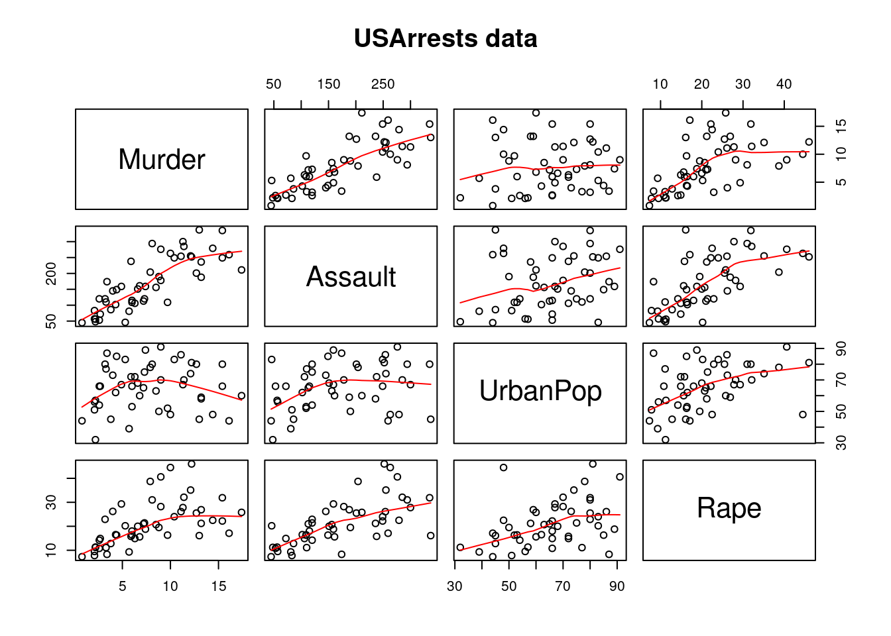
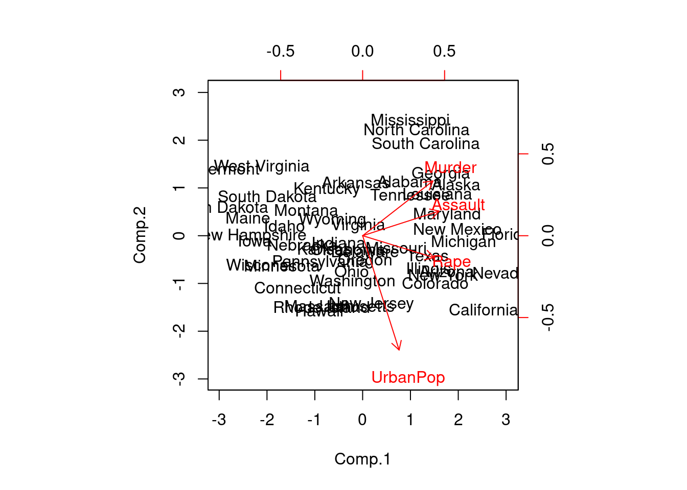
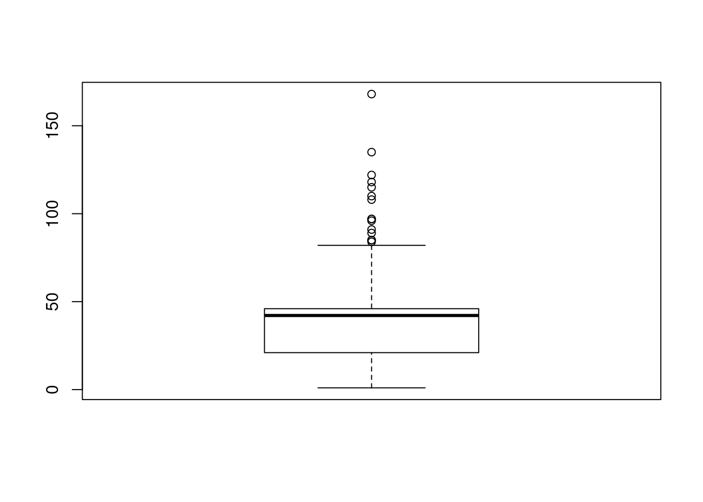

2 데이터 전처리
데이터 전처리는 로우 데이터에 대한 정제, 데이터 통합, 데이터 변환 등의 과정을 수행하여, 진행하고자 하는 분석에 최적화된 형태로 데이터를 변형하는 과정에 해당한다.
2.1 제어문
2.1.1 조건문
2.1.1.1 if/else
2.1.1.2 ifelse
2.1.2 반복문
2.1.2.1 for
2.1.2.2 while
2.1.2.3 repeat
2.2 데이터 변환
2.2.1 파생변수 생성
2.2.2 변수 축소
2.2.2.1 주성분분석
2.2.2.1.1 개념
- 주성분분석이란 데이터에 여러 변수들이 있을 때 서로 상관성이 높은 변수들의 선형결합으로 이루어진 ‘주성분’ 이라는 새로운 변수를 만들어 변수들을 요약하고 축소하는 기법이다.
- 예를 들어, 변수 x와 z로 y를 예측하고자 할 때 x=3a, z=a+1, y=2x+z와 같은 관계가 성립된다면 굳이 x와 z라는 두 변수를 사용하지 않고, 변수 a로만 y를 예측하는 것이 더 좋을 것이다. 이와 같이 여러 변수의 선형조합으로 만들어진 주성분을 통해 변수들을 축소할 수 있다.
- 주성분분석을 할 때, 첫 번째 주성분으로 전체 변동을 가장 많이 설명할 수 있도록 하고, 두 번째 주성분으로는 첫 번째 주성분이 설명하지 못하는 나머지 변동을 정보의 손실 없이 가장 많이 설명할 수 있도록 변수들의 선형조합을 만든다. 각 주성분은 서로 독립인 것(상관계수 = 0)을 원칙으로 한다.
2.2.2.1.2 목적
- 소수의 주성분으로 차원을 축소함.
- 다중공선성이 존재하는 경우, 상관성이 없는 (적은) 주성분으로 변수들을 축소
- 주성분분석을 통해 변수 차원을 축소한 후 군집분석을 수행하면 군집화 결과와 연산속도를 개선할 수 있다.
2.2.2.1.3 주성분의 선택
- 기여율
- ’주성분 기여율’을 사용하여 주성분이 데이터를 얼마나 잘 설명하는지 평가함.
- 주성분 기여율 : 원변수의 총변동 (각 변수들의 분산값 총합) 분의 주성분 변수의 분산으로, 총변동에 대한 주성분의 설명력을 의미한다.
- 기여율은 1에 가까울수록 적절하고 0에 가까울수록 데이터에 대한 설명력이 떨어진다고 판단한다.
- 첫번째 주성분부터 차례대로 기여율을 합한 누적 기여율(cumulative proportion)이 85% 이상이 되면 해당 지점까지를 주성분의 수로 결정한다. 아래의 사진에서는 두 번째 주성분까지의 누적 기여율이 약 87%이므로, 주성분의 수를 두 개로 결정한다.
- 스크리 산점도 (Scree Plot)
- 주성분을 x축, 각 주성분의 고유값(주성분의 분산)을 y축에 둔 그래프이다. 고유치가 급격히 완만해지는 지점의 바로 전 단계로 주성분의 수를 선택한다.
2.2.2.1.4 R을 이용한 주성분 분석
- R에서 주성분분석을 수행할 수 있는 기본적인 함수는 prcomp와 princomp이다. prcomp 함수는 자료 행렬에 특이값 분해(SVD: Singular Value Decomposition) 하는 방법을 사용하고, princomp 함수는 공분산 행렬의 고유벡터를 구하는 방법을 사용한다.
prcomp(data, center=TRUE, scale.=FALSE, ...)| 인자 | 설명 |
|---|---|
| data | 주성분분석을 수행할 행렬 혹은 데이터 프레임 |
| center | 값을 TRUE로 지정할 경우, 데이터의 중심이 0이 되게 함. |
| scale | 값을 TRUE로 지정할 경우 데이터를 표준화함. |
princomp(data, cor=FALSE, scores=TRUE, ...)| 인자 | 설명 |
|---|---|
| data | 주성분분석을 구행할 행렬 혹은 데이터 프레임 |
| cor | cor=FALSE: 공분산행렬로 주성분 분석 수행 cor=TRUE: |
Q. R에 내장된 USArrests 데이터는 1973년 미국 50개주 100,000명의 인구 당 체포된 세가지 강력범죄수(assault, murder, rape)와 각 주마다 도시에 거주하는 인구의 비율(%)로 구성되어 있다. 주성분 분석을 수행하여 해당 데이터의 변수들을 가장 잘 요약하는 주성분을 구하고 해석해 보자.
- USArrests 데이터는 변수들 간의 척도 차이가 상당히 크기 때문에 상관행렬을 사용하여 분석한다.
- 특이치 분해를 사용하는 경우 자료 행렬 각 변수의 평균과 제곱의 합이 1로 표준화되었다고 가정할 수 있다.
(1) 데이터 확인 및 산점도를 통한 변수 간 상관관계 파악
library(datasets)
data(USArrests)
head(USArrests)## Murder Assault UrbanPop Rape
## Alabama 13.2 236 58 21.2
## Alaska 10.0 263 48 44.5
## Arizona 8.1 294 80 31.0
## Arkansas 8.8 190 50 19.5
## California 9.0 276 91 40.6
## Colorado 7.9 204 78 38.7Click for Result
USArrests## Murder Assault UrbanPop Rape
## Alabama 13.2 236 58 21.2
## Alaska 10.0 263 48 44.5
## Arizona 8.1 294 80 31.0
## Arkansas 8.8 190 50 19.5
## California 9.0 276 91 40.6
## Colorado 7.9 204 78 38.7
## Connecticut 3.3 110 77 11.1
## Delaware 5.9 238 72 15.8
## Florida 15.4 335 80 31.9
## Georgia 17.4 211 60 25.8
## Hawaii 5.3 46 83 20.2
## Idaho 2.6 120 54 14.2
## Illinois 10.4 249 83 24.0
## Indiana 7.2 113 65 21.0
## Iowa 2.2 56 57 11.3
## Kansas 6.0 115 66 18.0
## Kentucky 9.7 109 52 16.3
## Louisiana 15.4 249 66 22.2
## Maine 2.1 83 51 7.8
## Maryland 11.3 300 67 27.8
## Massachusetts 4.4 149 85 16.3
## Michigan 12.1 255 74 35.1
## Minnesota 2.7 72 66 14.9
## Mississippi 16.1 259 44 17.1
## Missouri 9.0 178 70 28.2
## Montana 6.0 109 53 16.4
## Nebraska 4.3 102 62 16.5
## Nevada 12.2 252 81 46.0
## New Hampshire 2.1 57 56 9.5
## New Jersey 7.4 159 89 18.8
## New Mexico 11.4 285 70 32.1
## New York 11.1 254 86 26.1
## North Carolina 13.0 337 45 16.1
## North Dakota 0.8 45 44 7.3
## Ohio 7.3 120 75 21.4
## Oklahoma 6.6 151 68 20.0
## Oregon 4.9 159 67 29.3
## Pennsylvania 6.3 106 72 14.9
## Rhode Island 3.4 174 87 8.3
## South Carolina 14.4 279 48 22.5
## South Dakota 3.8 86 45 12.8
## Tennessee 13.2 188 59 26.9
## Texas 12.7 201 80 25.5
## Utah 3.2 120 80 22.9
## Vermont 2.2 48 32 11.2
## Virginia 8.5 156 63 20.7
## Washington 4.0 145 73 26.2
## West Virginia 5.7 81 39 9.3
## Wisconsin 2.6 53 66 10.8
## Wyoming 6.8 161 60 15.6pairs(USArrests, panel=panel.smooth, main="USArrests data")
- Murder와 UrbanPop 비율간의 관련성이 작아 보인다.
(2) 주성분분석 수행
US.prin <- princomp(USArrests, cor=TRUE)
summary(US.prin)## Importance of components:
## Comp.1 Comp.2 Comp.3 Comp.4
## Standard deviation 1.5748783 0.9948694 0.5971291 0.41644938
## Proportion of Variance 0.6200604 0.2474413 0.0891408 0.04335752
## Cumulative Proportion 0.6200604 0.8675017 0.9566425 1.00000000- 주성분 분석 결과에 summary함수를 적용하면 결과에 대한 요약 설명이 나온다. summary 결과로 나오는 Standard deviation은 주성분의 표준편차, Proportion of Variance는 주성분의 기여율, Cumulative Proportion은 누적기여율을 의미한다.
- 제1주성분과 제2주성분까지의 누적 기여율은 대략 86.8%로 2개의 주성분변수를 활용하여 전체 데이터의 약 86.8%를 설명할 수 있다.
plot(US.prin, type='l')
- 주성분들에 의해 설명되는 변동의 비율은 Screeplot을 통해 시각적으로도 확인이 가능하다. 그래프의 3번재 주성분에서 기울기가 급격하게 줄어드는 형태를 보이므로, 그 이전 주성분인 2번째 주성분까지 선택하는 것이 적절하다.
(3) Loading
US.prin$loadings##
## Loadings:
## Comp.1 Comp.2 Comp.3 Comp.4
## Murder 0.536 0.418 0.341 0.649
## Assault 0.583 0.188 0.268 -0.743
## UrbanPop 0.278 -0.873 0.378 0.134
## Rape 0.543 -0.167 -0.818
##
## Comp.1 Comp.2 Comp.3 Comp.4
## SS loadings 1.00 1.00 1.00 1.00
## Proportion Var 0.25 0.25 0.25 0.25
## Cumulative Var 0.25 0.50 0.75 1.00- 주성분분석 결과의 loading을 통해 주성분계수 즉, 네 개의 변수가 각 주성분에 기여하는 가중치가 제시된다. 제 1주성분은 0.536 * Murder + 0.583 * Assault + 0.278 * UrbanPop + 0.543 * Rape의 선형결합식으로 이루어져 있음을 파악할 수 있다.
(4) Scores
주성분분석 결과, 차원축소로 얻어지는 주성분점수는 scores 인자를 통해 확인할 수 있다. 주성분 점수는 주성분들의 선형식을 통해 새롭게 계산된 각 행별 좌표를 나타낸다.
head(US.prin$scores)## Comp.1 Comp.2 Comp.3 Comp.4
## Alabama 0.9855659 1.1333924 0.44426879 0.156267145
## Alaska 1.9501378 1.0732133 -2.04000333 -0.438583440
## Arizona 1.7631635 -0.7459568 -0.05478082 -0.834652924
## Arkansas -0.1414203 1.1197968 -0.11457369 -0.182810896
## California 2.5239801 -1.5429340 -0.59855680 -0.341996478
## Colorado 1.5145629 -0.9875551 -1.09500699 0.001464887(5) 제 1-2 주성분에 의한 행렬도
biplot(US.prin, scale=0)
- biplot 함수는 제1주성분과 제2주성분으로 이루어진 좌표평면상에 원데이터 행들의 주성분점수를 산점도의 형태로 나타내고, 각 변수에 대한 주성분계수를 화살표로 시각화하여 그래프로 표현해 준다.
- 제1주성분의 모든 주성분계수는 양수이므로 가로축(PC1)을 기준으로 모든 변수가 0 이상의 값을 가리키는 축을 나타내고 있다. PC1을 이루는 선형 결합식에서 상대적 부하량의 절대값이 가장 큰 Assault 변수는 가장 수평의 형태를 나타내고 있으며, 상대적 부하량의 절대값이 가장 작은 UrbanPop 변수는 가장 수직에 가까운 형태를 나타내고 있다.
2.2.2.2 요인분석
2.2.2.2.1 개념
- 여러개의 변수들로 이루어진 데이터에서 변수들 간의 상관관계를 고려하여 서로 유사한 변수들을 묶어 새로운 잠재요인들을 추출해내는 분석방법으로, 변수를 축소하고 데이터를 요약하는데 사용
- 예를 들어, 시험성적에 대한 데이터가 ’국어, 영어, 중국어, 수학, 물리, 음악, 미술’에 해당하는 7개의 변수로 이루어져 있다고 하자. 이 7개가 아닌 공통의 변수들을 파악해 국어, 영어, 중국어를 (언어능력), 수학, 물리를 (수리능력), 음악, 미술을 (예술적 재능) 등과 같이 새로운 요인들로 구성해낼 때 요인분석을 사용한다.
- 요인분석을 수행하기 위해서는 변수가 간격척도 혹은 비율척도로 측정되어야 하며, 표본(관측치)의 크기는 100개 이상이 바람직하며 최소 50개 이상이 되어야 한다.
2.2.2.2.2 주성분분석 .vs. 요인분석
| 주성분분석 | 요인분석 | |
|---|---|---|
| 공통점 | * 원데이터를 활용하여 몇개의 새로운 변수를 생성 * 변수축소 및 데이터 요약에 사용됨 |
|
| 생성되는 변수의 수 | 통상적으로 2개 | 지정된 개수 없음 |
| 생성되는 변수의 이름 | 제1, 2주성분과 같이 표현됨 | 분석가가 변수의 이름을 지정함 |
| 생성되는 변수들의 관계 | 제1주성분이 가장중요. 2주성분이 그다음 | 대등한 관계 |
| 분석방법의 의미 | 목표변수를 잘 예측/분류하기 위해 기존 변수들의 선형결합으로 이루어진 몇 개의 주성분을 찾아냄 | 목표변수를 고려하지 않고 주어진 변수들을 비슷한 성격으로 묶어서 새로운 (잠재)변수를 생성 |
2.2.2.2.3 요인추출방법
- 주성분분석 : 변수들로부터 요인을 추출하는 방식으로, 전체분산을 토대로 요인을 추출. 가장 많이 사용
- 공통요인분석 : 잠재요인으로부터 변수들이 산출된 것으로 보는 방식, 공통분산만을 토대로 요인을 추출.
2.2.2.2.4 요인의 수 결정
- 고유값을 기준으로 할 때는, 고유값이 1이상인 요인들을 추출한다.
- 스크리 도표에서 요인의 설명력이 하락하다가 완만한 하락으로 추세가 바뀌기 직전의 요인수를 기준으로 요인을 추출한다.
- 경우에 따라 추출할 요인의 수를 사전에 정의한 후 요인분석을 수행할 수도 있다.
2.2.2.2.5 R을 이용한 요인분석
- R에서 요인추출법으로 주성분분석을 사용할 때는 prcomp 혹은 principal 함수를 활용하며, 요인추출법으로 공통요인분석을 사용할 때는 factanal 함수를 사용한다.
factanal(data, factors=n, rotation="varimax", scores="regression", ...)| 인자 | 설명 |
|---|---|
| data | 요인분석을 수행할 숫자형 행렬 혹은 데이터프레임 |
| factors | 요인의 개수 지정 |
| rotation | 요인 회전방법을 선택 (“varimax”, “promax”, “none”이 있음) |
| scores | 요인점수 계산방법을 선택 (“regression”, “Bartlett”가 있음) |
Q. R의 내장 데이터 swiss는 1888년 경 스위스 내 47개주의 사회 경제적 지표(교육, 농업 종사자 비율 등)와 출산율에 대한 데이터이다. 원활한 분석을 위해 먼저 해당 데이터의 6가지 변수들을 min-max 정규화한 뒤 (2장 3절 표준화와 정규화 참고), 요인분석을 실시하여 변수들을 3개의 요인으로 축소해 보자. (factanal 함수 사용)
(1) swiss 데이터 확인
data(swiss)
str(swiss)## 'data.frame': 47 obs. of 6 variables:
## $ Fertility : num 80.2 83.1 92.5 85.8 76.9 76.1 83.8 92.4 82.4 82.9 ...
## $ Agriculture : num 17 45.1 39.7 36.5 43.5 35.3 70.2 67.8 53.3 45.2 ...
## $ Examination : int 15 6 5 12 17 9 16 14 12 16 ...
## $ Education : int 12 9 5 7 15 7 7 8 7 13 ...
## $ Catholic : num 9.96 84.84 93.4 33.77 5.16 ...
## $ Infant.Mortality: num 22.2 22.2 20.2 20.3 20.6 26.6 23.6 24.9 21 24.4 ...Click for Result
swiss## Fertility Agriculture Examination Education Catholic
## Courtelary 80.2 17.0 15 12 9.96
## Delemont 83.1 45.1 6 9 84.84
## Franches-Mnt 92.5 39.7 5 5 93.40
## Moutier 85.8 36.5 12 7 33.77
## Neuveville 76.9 43.5 17 15 5.16
## Porrentruy 76.1 35.3 9 7 90.57
## Broye 83.8 70.2 16 7 92.85
## Glane 92.4 67.8 14 8 97.16
## Gruyere 82.4 53.3 12 7 97.67
## Sarine 82.9 45.2 16 13 91.38
## Veveyse 87.1 64.5 14 6 98.61
## Aigle 64.1 62.0 21 12 8.52
## Aubonne 66.9 67.5 14 7 2.27
## Avenches 68.9 60.7 19 12 4.43
## Cossonay 61.7 69.3 22 5 2.82
## Echallens 68.3 72.6 18 2 24.20
## Grandson 71.7 34.0 17 8 3.30
## Lausanne 55.7 19.4 26 28 12.11
## La Vallee 54.3 15.2 31 20 2.15
## Lavaux 65.1 73.0 19 9 2.84
## Morges 65.5 59.8 22 10 5.23
## Moudon 65.0 55.1 14 3 4.52
## Nyone 56.6 50.9 22 12 15.14
## Orbe 57.4 54.1 20 6 4.20
## Oron 72.5 71.2 12 1 2.40
## Payerne 74.2 58.1 14 8 5.23
## Paysd'enhaut 72.0 63.5 6 3 2.56
## Rolle 60.5 60.8 16 10 7.72
## Vevey 58.3 26.8 25 19 18.46
## Yverdon 65.4 49.5 15 8 6.10
## Conthey 75.5 85.9 3 2 99.71
## Entremont 69.3 84.9 7 6 99.68
## Herens 77.3 89.7 5 2 100.00
## Martigwy 70.5 78.2 12 6 98.96
## Monthey 79.4 64.9 7 3 98.22
## St Maurice 65.0 75.9 9 9 99.06
## Sierre 92.2 84.6 3 3 99.46
## Sion 79.3 63.1 13 13 96.83
## Boudry 70.4 38.4 26 12 5.62
## La Chauxdfnd 65.7 7.7 29 11 13.79
## Le Locle 72.7 16.7 22 13 11.22
## Neuchatel 64.4 17.6 35 32 16.92
## Val de Ruz 77.6 37.6 15 7 4.97
## ValdeTravers 67.6 18.7 25 7 8.65
## V. De Geneve 35.0 1.2 37 53 42.34
## Rive Droite 44.7 46.6 16 29 50.43
## Rive Gauche 42.8 27.7 22 29 58.33
## Infant.Mortality
## Courtelary 22.2
## Delemont 22.2
## Franches-Mnt 20.2
## Moutier 20.3
## Neuveville 20.6
## Porrentruy 26.6
## Broye 23.6
## Glane 24.9
## Gruyere 21.0
## Sarine 24.4
## Veveyse 24.5
## Aigle 16.5
## Aubonne 19.1
## Avenches 22.7
## Cossonay 18.7
## Echallens 21.2
## Grandson 20.0
## Lausanne 20.2
## La Vallee 10.8
## Lavaux 20.0
## Morges 18.0
## Moudon 22.4
## Nyone 16.7
## Orbe 15.3
## Oron 21.0
## Payerne 23.8
## Paysd'enhaut 18.0
## Rolle 16.3
## Vevey 20.9
## Yverdon 22.5
## Conthey 15.1
## Entremont 19.8
## Herens 18.3
## Martigwy 19.4
## Monthey 20.2
## St Maurice 17.8
## Sierre 16.3
## Sion 18.1
## Boudry 20.3
## La Chauxdfnd 20.5
## Le Locle 18.9
## Neuchatel 23.0
## Val de Ruz 20.0
## ValdeTravers 19.5
## V. De Geneve 18.0
## Rive Droite 18.2
## Rive Gauche 19.3(2) 정규화 수행 및 실습용 데이터 생성
Min <- apply(swiss, 2, min)
Max <- apply(swiss, 2, max)
swiss_fa <- scale(swiss, center=Min, scale=(Max-Min))
head(swiss_fa)## Fertility Agriculture Examination Education Catholic
## Courtelary 0.7860870 0.1785311 0.35294118 0.21153846 0.07981604
## Delemont 0.8365217 0.4960452 0.08823529 0.15384615 0.84506898
## Franches-Mnt 1.0000000 0.4350282 0.05882353 0.07692308 0.93254982
## Moutier 0.8834783 0.3988701 0.26470588 0.11538462 0.32314768
## Neuveville 0.7286957 0.4779661 0.41176471 0.26923077 0.03076137
## Porrentruy 0.7147826 0.3853107 0.17647059 0.11538462 0.90362800
## Infant.Mortality
## Courtelary 0.7215190
## Delemont 0.7215190
## Franches-Mnt 0.5949367
## Moutier 0.6012658
## Neuveville 0.6202532
## Porrentruy 1.0000000Click for Result
swiss_fa## Fertility Agriculture Examination Education Catholic
## Courtelary 0.7860870 0.17853107 0.35294118 0.21153846 0.079816045
## Delemont 0.8365217 0.49604520 0.08823529 0.15384615 0.845068983
## Franches-Mnt 1.0000000 0.43502825 0.05882353 0.07692308 0.932549821
## Moutier 0.8834783 0.39887006 0.26470588 0.11538462 0.323147675
## Neuveville 0.7286957 0.47796610 0.41176471 0.26923077 0.030761369
## Porrentruy 0.7147826 0.38531073 0.17647059 0.11538462 0.903628002
## Broye 0.8486957 0.77966102 0.38235294 0.11538462 0.926928973
## Glane 0.9982609 0.75254237 0.32352941 0.13461538 0.970975984
## Gruyere 0.8243478 0.58870056 0.26470588 0.11538462 0.976188043
## Sarine 0.8330435 0.49717514 0.38235294 0.23076923 0.911905979
## Veveyse 0.9060870 0.71525424 0.32352941 0.09615385 0.985794584
## Aigle 0.5060870 0.68700565 0.52941176 0.21153846 0.065099642
## Aubonne 0.5547826 0.74915254 0.32352941 0.11538462 0.001226367
## Avenches 0.5895652 0.67231638 0.47058824 0.21153846 0.023300971
## Cossonay 0.4643478 0.76949153 0.55882353 0.07692308 0.006847215
## Echallens 0.5791304 0.80677966 0.44117647 0.01923077 0.225344916
## Grandson 0.6382609 0.37062147 0.41176471 0.13461538 0.011752683
## Lausanne 0.3600000 0.20564972 0.67647059 0.51923077 0.101788452
## La Vallee 0.3356522 0.15819209 0.82352941 0.36538462 0.000000000
## Lavaux 0.5234783 0.81129944 0.47058824 0.15384615 0.007051610
## Morges 0.5304348 0.66214689 0.55882353 0.17307692 0.031476750
## Moudon 0.5217391 0.60903955 0.32352941 0.03846154 0.024220746
## Nyone 0.3756522 0.56158192 0.55882353 0.21153846 0.132754216
## Orbe 0.3895652 0.59774011 0.50000000 0.09615385 0.020950434
## Oron 0.6521739 0.79096045 0.26470588 0.00000000 0.002554931
## Payerne 0.6817391 0.64293785 0.32352941 0.13461538 0.031476750
## Paysd'enhaut 0.6434783 0.70395480 0.08823529 0.03846154 0.004190087
## Rolle 0.4434783 0.67344633 0.38235294 0.17307692 0.056923863
## Vevey 0.4052174 0.28926554 0.64705882 0.34615385 0.166683700
## Yverdon 0.5286957 0.54576271 0.35294118 0.13461538 0.040367910
## Conthey 0.7043478 0.95706215 0.00000000 0.01923077 0.997036280
## Entremont 0.5965217 0.94576271 0.11764706 0.09615385 0.996729688
## Herens 0.7356522 1.00000000 0.05882353 0.01923077 1.000000000
## Martigwy 0.6173913 0.87005650 0.26470588 0.09615385 0.989371487
## Monthey 0.7721739 0.71977401 0.11764706 0.03846154 0.981808891
## St Maurice 0.5217391 0.84406780 0.17647059 0.15384615 0.990393459
## Sierre 0.9947826 0.94237288 0.00000000 0.03846154 0.994481349
## Sion 0.7704348 0.69943503 0.29411765 0.23076923 0.967603475
## Boudry 0.6156522 0.42033898 0.67647059 0.21153846 0.035462443
## La Chauxdfnd 0.5339130 0.07344633 0.76470588 0.19230769 0.118957588
## Le Locle 0.6556522 0.17514124 0.55882353 0.23076923 0.092692897
## Neuchatel 0.5113043 0.18531073 0.94117647 0.59615385 0.150945324
## Val de Ruz 0.7408696 0.41129944 0.35294118 0.11538462 0.028819622
## ValdeTravers 0.5669565 0.19774011 0.64705882 0.11538462 0.066428206
## V. De Geneve 0.0000000 0.00000000 1.00000000 1.00000000 0.410730710
## Rive Droite 0.1686957 0.51299435 0.38235294 0.53846154 0.493408278
## Rive Gauche 0.1356522 0.29943503 0.55882353 0.53846154 0.574144098
## Infant.Mortality
## Courtelary 0.7215190
## Delemont 0.7215190
## Franches-Mnt 0.5949367
## Moutier 0.6012658
## Neuveville 0.6202532
## Porrentruy 1.0000000
## Broye 0.8101266
## Glane 0.8924051
## Gruyere 0.6455696
## Sarine 0.8607595
## Veveyse 0.8670886
## Aigle 0.3607595
## Aubonne 0.5253165
## Avenches 0.7531646
## Cossonay 0.5000000
## Echallens 0.6582278
## Grandson 0.5822785
## Lausanne 0.5949367
## La Vallee 0.0000000
## Lavaux 0.5822785
## Morges 0.4556962
## Moudon 0.7341772
## Nyone 0.3734177
## Orbe 0.2848101
## Oron 0.6455696
## Payerne 0.8227848
## Paysd'enhaut 0.4556962
## Rolle 0.3481013
## Vevey 0.6392405
## Yverdon 0.7405063
## Conthey 0.2721519
## Entremont 0.5696203
## Herens 0.4746835
## Martigwy 0.5443038
## Monthey 0.5949367
## St Maurice 0.4430380
## Sierre 0.3481013
## Sion 0.4620253
## Boudry 0.6012658
## La Chauxdfnd 0.6139241
## Le Locle 0.5126582
## Neuchatel 0.7721519
## Val de Ruz 0.5822785
## ValdeTravers 0.5506329
## V. De Geneve 0.4556962
## Rive Droite 0.4683544
## Rive Gauche 0.5379747
## attr(,"scaled:center")
## Fertility Agriculture Examination Education
## 35.00 1.20 3.00 1.00
## Catholic Infant.Mortality
## 2.15 10.80
## attr(,"scaled:scale")
## Fertility Agriculture Examination Education
## 57.50 88.50 34.00 52.00
## Catholic Infant.Mortality
## 97.85 15.80(3) 요인분석 수행
factanal(x = swiss_fa, factors=3)##
## Call:
## factanal(x = swiss_fa, factors = 3)
##
## Uniquenesses:
## Fertility Agriculture Examination Education
## 0.005 0.286 0.213 0.114
## Catholic Infant.Mortality
## 0.083 0.743
##
## Loadings:
## Factor1 Factor2 Factor3
## Fertility -0.512 0.203 0.832
## Agriculture -0.774 0.312 -0.129
## Examination 0.751 -0.423 -0.211
## Education 0.901 -0.262
## Catholic -0.186 0.913 0.220
## Infant.Mortality 0.500
##
## Factor1 Factor2 Factor3
## SS loadings 2.273 1.164 1.120
## Proportion Var 0.379 0.194 0.187
## Cumulative Var 0.379 0.573 0.759
##
## The degrees of freedom for the model is 0 and the fit was 1e-04- 요인분석 결과의 Proportion Var는 각 요인이 설명하는 분산의 비율이며 Cumulative Var는 요인별 해당값의 누적치이다. 세번째 요인에 대한 Cumulative Var 값이 0.759이므로 세 요인은 전체 데이터 분산의 약 76%를 설명할 수 있다고 해석이 가능한다.
2.2.3 표준화와 정규화
2.2.3.1 표준화 (standardization)
- 각 개체들이 평균을 기준으로 얼마나 떨어져 있는지를 나타내는 값으로 변환하는 과정을 의미하여, 표준화한 후 특정 범위를 벗어난 데이터를 확인하여 이상치 판별에 활용할 수도 있다.
- Z-Score 표준화는 각 요소의 값에서 평균을 뺀 후 표준편차로 나누어 수행한다. 변환 후 데이터의 평균은 0, 표준편차는 1의 값을 갖게 된다. scale 함수 혹은 사용자 정의 함수를 이용하여 R에서 구현할 수 있다.
scale(data, center=TRUE, scale=TRUE)| 인자 | 설명 |
|---|---|
| data | 숫자형벡터 |
| center | TRUE이면 데이터에서 해당 벡터의 평균을 뺌 |
Q. R의 내장 데이터 ’mtcars’의 mpg(마일)변수와 hp(총 마력)변수로만 이루어진 데이터프레임(test, cars)을 생성하고, 각 변수를 표준화한 새로운 변수를 추가해 보자. (mpg를 표준화한 변수의 이름은 mpg_scale, hp를 표준화한 변수의 이름은 hp_scale로 지정)
data("mtcars")
str(mtcars)## 'data.frame': 32 obs. of 11 variables:
## $ mpg : num 21 21 22.8 21.4 18.7 18.1 14.3 24.4 22.8 19.2 ...
## $ cyl : num 6 6 4 6 8 6 8 4 4 6 ...
## $ disp: num 160 160 108 258 360 ...
## $ hp : num 110 110 93 110 175 105 245 62 95 123 ...
## $ drat: num 3.9 3.9 3.85 3.08 3.15 2.76 3.21 3.69 3.92 3.92 ...
## $ wt : num 2.62 2.88 2.32 3.21 3.44 ...
## $ qsec: num 16.5 17 18.6 19.4 17 ...
## $ vs : num 0 0 1 1 0 1 0 1 1 1 ...
## $ am : num 1 1 1 0 0 0 0 0 0 0 ...
## $ gear: num 4 4 4 3 3 3 3 4 4 4 ...
## $ carb: num 4 4 1 1 2 1 4 2 2 4 ...test.cars <- mtcars[,c("mpg", "hp")]
head(test.cars)## mpg hp
## Mazda RX4 21.0 110
## Mazda RX4 Wag 21.0 110
## Datsun 710 22.8 93
## Hornet 4 Drive 21.4 110
## Hornet Sportabout 18.7 175
## Valiant 18.1 105Click for Result
head(test.cars, n=100)## mpg hp
## Mazda RX4 21.0 110
## Mazda RX4 Wag 21.0 110
## Datsun 710 22.8 93
## Hornet 4 Drive 21.4 110
## Hornet Sportabout 18.7 175
## Valiant 18.1 105
## Duster 360 14.3 245
## Merc 240D 24.4 62
## Merc 230 22.8 95
## Merc 280 19.2 123
## Merc 280C 17.8 123
## Merc 450SE 16.4 180
## Merc 450SL 17.3 180
## Merc 450SLC 15.2 180
## Cadillac Fleetwood 10.4 205
## Lincoln Continental 10.4 215
## Chrysler Imperial 14.7 230
## Fiat 128 32.4 66
## Honda Civic 30.4 52
## Toyota Corolla 33.9 65
## Toyota Corona 21.5 97
## Dodge Challenger 15.5 150
## AMC Javelin 15.2 150
## Camaro Z28 13.3 245
## Pontiac Firebird 19.2 175
## Fiat X1-9 27.3 66
## Porsche 914-2 26.0 91
## Lotus Europa 30.4 113
## Ford Pantera L 15.8 264
## Ferrari Dino 19.7 175
## Maserati Bora 15.0 335
## Volvo 142E 21.4 109test.cars <- transform(test.cars, mpg_scale=scale(test.cars$mpg), hp_scale=scale(test.cars$hp))
head(test.cars)## mpg hp mpg_scale hp_scale
## Mazda RX4 21.0 110 0.1508848 -0.5350928
## Mazda RX4 Wag 21.0 110 0.1508848 -0.5350928
## Datsun 710 22.8 93 0.4495434 -0.7830405
## Hornet 4 Drive 21.4 110 0.2172534 -0.5350928
## Hornet Sportabout 18.7 175 -0.2307345 0.4129422
## Valiant 18.1 105 -0.3302874 -0.6080186Click for Result
head(test.cars, n=100)## mpg hp mpg_scale hp_scale
## Mazda RX4 21.0 110 0.15088482 -0.53509284
## Mazda RX4 Wag 21.0 110 0.15088482 -0.53509284
## Datsun 710 22.8 93 0.44954345 -0.78304046
## Hornet 4 Drive 21.4 110 0.21725341 -0.53509284
## Hornet Sportabout 18.7 175 -0.23073453 0.41294217
## Valiant 18.1 105 -0.33028740 -0.60801861
## Duster 360 14.3 245 -0.96078893 1.43390296
## Merc 240D 24.4 62 0.71501778 -1.23518023
## Merc 230 22.8 95 0.44954345 -0.75387015
## Merc 280 19.2 123 -0.14777380 -0.34548584
## Merc 280C 17.8 123 -0.38006384 -0.34548584
## Merc 450SE 16.4 180 -0.61235388 0.48586794
## Merc 450SL 17.3 180 -0.46302456 0.48586794
## Merc 450SLC 15.2 180 -0.81145962 0.48586794
## Cadillac Fleetwood 10.4 205 -1.60788262 0.85049680
## Lincoln Continental 10.4 215 -1.60788262 0.99634834
## Chrysler Imperial 14.7 230 -0.89442035 1.21512565
## Fiat 128 32.4 66 2.04238943 -1.17683962
## Honda Civic 30.4 52 1.71054652 -1.38103178
## Toyota Corolla 33.9 65 2.29127162 -1.19142477
## Toyota Corona 21.5 97 0.23384555 -0.72469984
## Dodge Challenger 15.5 150 -0.76168319 0.04831332
## AMC Javelin 15.2 150 -0.81145962 0.04831332
## Camaro Z28 13.3 245 -1.12671039 1.43390296
## Pontiac Firebird 19.2 175 -0.14777380 0.41294217
## Fiat X1-9 27.3 66 1.19619000 -1.17683962
## Porsche 914-2 26.0 91 0.98049211 -0.81221077
## Lotus Europa 30.4 113 1.71054652 -0.49133738
## Ford Pantera L 15.8 264 -0.71190675 1.71102089
## Ferrari Dino 19.7 175 -0.06481307 0.41294217
## Maserati Bora 15.0 335 -0.84464392 2.74656682
## Volvo 142E 21.4 109 0.21725341 -0.549677992.2.3.2 정규화 (Normalization)
- 정규화란 데이터의 범위를 0과 1사이로 변환하여 데이터의 분포를 조정하는 방법으로, 데이터군 내에서 특정 개체가 가지는 위치를 파악하고 비교할 때 유용하게 사용할 수 있다.
- 일반적으로 많이 사용되는 min-max 정규화는 ’(xi - minx)/(maxi-minx)’의 공식을 이용하며, scale함수 혹은 사용자 정의 함수를 이용하는 등 다양한 방법을 사용할 수 있다.
2.2.3.3 scale 함수 이용
Min <- min(iris$Sepal.Length)
Max <- max(iris$Sepal.Length)
iris$SL_new <- scale(iris$Sepal.Length, center=Min, scale=Max-Min)
head(iris)## Sepal.Length Sepal.Width Petal.Length Petal.Width Species SL_new
## 1 5.1 3.5 1.4 0.2 setosa 0.22222222
## 2 4.9 3.0 1.4 0.2 setosa 0.16666667
## 3 4.7 3.2 1.3 0.2 setosa 0.11111111
## 4 4.6 3.1 1.5 0.2 setosa 0.08333333
## 5 5.0 3.6 1.4 0.2 setosa 0.19444444
## 6 5.4 3.9 1.7 0.4 setosa 0.305555562.3 데이터 결합 및 요약
2.3.1 데이터 결합
2.3.1.1 rbind
2.3.1.2 cbind
2.3.1.3 merge
- merge는 두 데이터프레임에서 기준이 되는 특정 칼럼의 값이 같은 행끼리 묶어 병합하는 함수이다. 이는 데이터베이스에서 join과 같은 역할을 한다.
merge(x, y, by, by.x, by.y, all=FALSE, all.x,)(id_name <- data.frame(id=c("c01", "c02", "c03", "c04", "c05", "c06", "c07"),
last_name=c("Lee", "Kim", "Choi", "park", "Lim", "Bae", "Kim")))## id last_name
## 1 c01 Lee
## 2 c02 Kim
## 3 c03 Choi
## 4 c04 park
## 5 c05 Lim
## 6 c06 Bae
## 7 c07 Kim(id_number <- data.frame(id=c("c03", "c04", "c05", "c06", "c07", "c08", "c09"),
number=c(3, 1, 0, 7, 3, 4, 1)))## id number
## 1 c03 3
## 2 c04 1
## 3 c05 0
## 4 c06 7
## 5 c07 3
## 6 c08 4
## 7 c09 1Q-1. Inner Join
merge(id_name, id_number, by="id")## id last_name number
## 1 c03 Choi 3
## 2 c04 park 1
## 3 c05 Lim 0
## 4 c06 Bae 7
## 5 c07 Kim 3Q-2. Outer Join
merge(id_name, id_number, by="id", all=TRUE)## id last_name number
## 1 c01 Lee NA
## 2 c02 Kim NA
## 3 c03 Choi 3
## 4 c04 park 1
## 5 c05 Lim 0
## 6 c06 Bae 7
## 7 c07 Kim 3
## 8 c08 <NA> 4
## 9 c09 <NA> 1Q-3. Left Outer Join
merge(id_name, id_number, by="id", all.x=TRUE)## id last_name number
## 1 c01 Lee NA
## 2 c02 Kim NA
## 3 c03 Choi 3
## 4 c04 park 1
## 5 c05 Lim 0
## 6 c06 Bae 7
## 7 c07 Kim 3Q-4. Right Outer Join
merge(id_name, id_number, by="id", all.y=TRUE)## id last_name number
## 1 c03 Choi 3
## 2 c04 park 1
## 3 c05 Lim 0
## 4 c06 Bae 7
## 5 c07 Kim 3
## 6 c08 <NA> 4
## 7 c09 <NA> 12.3.2 데이터 요약
2.3.2.1 aggregate
aggregate(x, by, FUN)
aggregate(formula, data, FUN)Q1. iris 데이터에서 종별 Sepal.width의 평균을 구해보자.
aggregate(Sepal.Width~Species, iris, mean)## Species Sepal.Width
## 1 setosa 3.428
## 2 versicolor 2.770
## 3 virginica 2.974Q2. iris 데이터에서 종별 Sepal.Width와 Petal.Width의 평균을 구해보자.
aggregate(cbind(Sepal.Width, Petal.Width)~Species, iris, mean)## Species Sepal.Width Petal.Width
## 1 setosa 3.428 0.246
## 2 versicolor 2.770 1.326
## 3 virginica 2.974 2.0262.3.2.2 table
Q1. 내장 데이터 Titanic은 타이타닉호 탑승자들의 특성에 따른 생존여부를 기록해놓은 데이터이다. Titanic 데이터에서 좌석등급을 의미하는 Class 변수에 대해서 도수분포표를 생성해 보자.
(1) 내장데이터 Titanic의 구조 확인
str(Titanic)## 'table' num [1:4, 1:2, 1:2, 1:2] 0 0 35 0 0 0 17 0 118 154 ...
## - attr(*, "dimnames")=List of 4
## ..$ Class : chr [1:4] "1st" "2nd" "3rd" "Crew"
## ..$ Sex : chr [1:2] "Male" "Female"
## ..$ Age : chr [1:2] "Child" "Adult"
## ..$ Survived: chr [1:2] "No" "Yes"(2) 데이터프레임으로 변환한 뒤 다시 구조를 확인
Titanic<-as.data.frame(Titanic)
str(Titanic)## 'data.frame': 32 obs. of 5 variables:
## $ Class : Factor w/ 4 levels "1st","2nd","3rd",..: 1 2 3 4 1 2 3 4 1 2 ...
## $ Sex : Factor w/ 2 levels "Male","Female": 1 1 1 1 2 2 2 2 1 1 ...
## $ Age : Factor w/ 2 levels "Child","Adult": 1 1 1 1 1 1 1 1 2 2 ...
## $ Survived: Factor w/ 2 levels "No","Yes": 1 1 1 1 1 1 1 1 1 1 ...
## $ Freq : num 0 0 35 0 0 0 17 0 118 154 ...(3) table 함수를 이용하여 범주형 변수 Class에 대한 도수분포표를 생성
table(Titanic$Class)##
## 1st 2nd 3rd Crew
## 8 8 8 8Q2. 내장데이터 Titanic에서 Survived 변수는 승객의 생존여부를 의미한다. 좌석등급과 생존여부의 관계를 살펴보기 위해 Class 변수에 따른 Survived 변수의 도수를 표 형태로 나타내 보자.
table(Titanic$Class, Titanic$Survived)##
## No Yes
## 1st 4 4
## 2nd 4 4
## 3rd 4 4
## Crew 4 42.3.2.3 prop.table
prop.table(table)
prop.table(table, 1)
prop.table(table, 2)Q. Titanic 데이터에서 Age 변수는 해당 승객이 어른인지 아이인지의 여부를 나타낸다. Age 변수에 따른 생존여부의 관계를 전체에 대한 비율, 행별 비율, 열별 비율로 살펴보자.
(1) 전체에 대한 비율
prop.table(table(Titanic$Age, Titanic$Survived))##
## No Yes
## Child 0.25 0.25
## Adult 0.25 0.25(2) 행별 비율
prop.table(table(Titanic$Age, Titanic$Survived), 1)##
## No Yes
## Child 0.5 0.5
## Adult 0.5 0.5(3) 열별 비율
prop.table(table(Titanic$Age, Titanic$Survived), 2)##
## No Yes
## Child 0.5 0.5
## Adult 0.5 0.52.3.3 apply 계열 함수
2.3.3.1 apply
- apply는 데이터의 행 혹은 열 방향으로 주어진 함수를 한번에 적용한 뒤 그 결과를 벡터, 배열, 리스트로 반환하는 함수이다.
apply(X, MARGIN, FUN)| 인자 | 설명 |
|---|---|
| X | 배열 또는 행렬 |
| MARGIN | MARGIN=1: 행방향, MARGIN=2: 열방향 |
| FUN | 적용할 함수 |
(a <- matrix(1:12, nrow=4, ncol=3))## [,1] [,2] [,3]
## [1,] 1 5 9
## [2,] 2 6 10
## [3,] 3 7 11
## [4,] 4 8 12apply(a, 1, max)## [1] 9 10 11 12apply(iris[, 1:4], 2, mean)## Sepal.Length Sepal.Width Petal.Length Petal.Width
## 5.843333 3.057333 3.758000 1.1993332.3.3.2 lapply
- lapply 함수는 벡터, 리스트, 표현식, 데이터 프레임 등에 함수를 적용하고, 그 결과를 리스트로 변환한다. lapply는 데이터프레임에 대해서는 열 방향으로 함수를 적용한다 (apply함수에서 MARGIN을 2로 지정했을 때와 동일)
- 적용 데이터가 데이터 프레임일 경우 lapply의 결과 리스트 길이는 데이터 프레임의 변수 개수와 같고, 적용 데이터가 벡터인 경우에 결과 리스트 길이는 벡터 원소의 개수와 같다.
lapply(X, FUN, ...)| 인자 | 설명 |
|---|---|
| X | 배열 또는 행렬 |
| FUN | 적용할 함수 |
a <- c(1, 2, 3)
lapply(a, FUN=function(x){x ^ 2})## [[1]]
## [1] 1
##
## [[2]]
## [1] 4
##
## [[3]]
## [1] 9class(lapply(a, FUN=function(x){x^2}))## [1] "list"b<- lapply(a, FUN=function(x){x^2})
unlist(b)## [1] 1 4 92.3.3.3 sapply
- sapply는 벡터, 리스트, 표현식, 데이터 프레임 등에 함수를 적용하고, 그 결과를 벡터 혹은 행렬로 반환한다. lapply와 마찬가지로 데이터프레임에 대해서는 열별로 함수를 적용한다. sapply의 s는 simplify를 의미한다. 즉, sapply 함수는 연산결과를 벡터로 단순화해서 반환해 준다. 그렇다면 sapply는 어떤 경우에 연산결과를 벡터, 행렬, 리스트로 나타낼까? 각 경우에 대한 설명은 아래와 같다.
| sapply 함수의 결과에 따른 반환 형태 |
|---|
| - 변수마다 함수를 적용한 결과값의 개수가 1개씩이면 벡터로 반환 - 변수마다 함수를 적용한 결과값의 개수가 1보다 크면 행렬로 반환 - 함수를 적용한 결과값의 개수가 변수마다 다르면 단순화할 수 없으므로 리스트로 반환 |
sapply(X, FUN, simplify=TRUE, ...)| 인자 | 설명 |
|---|---|
| X | 배열 또는 행렬 |
| FUN | 적용할 함수 |
| simplify | 단순화에 대한 여부를 지정하기 위한 인자로 FALSE로 값을 설정하면 리스트가 반환됨 |
Q1. iris 데이터에서 각 칼럼별 데이터 타입을 구해보자.
sapply(iris, class)## Sepal.Length Sepal.Width Petal.Length Petal.Width Species SL_new
## "numeric" "numeric" "numeric" "numeric" "factor" "matrix"Q2. iris 데이터에서 각 칼럼에 summary 함수를 적용해 보자.
sapply(iris, summary)## $Sepal.Length
## Min. 1st Qu. Median Mean 3rd Qu. Max.
## 4.300 5.100 5.800 5.843 6.400 7.900
##
## $Sepal.Width
## Min. 1st Qu. Median Mean 3rd Qu. Max.
## 2.000 2.800 3.000 3.057 3.300 4.400
##
## $Petal.Length
## Min. 1st Qu. Median Mean 3rd Qu. Max.
## 1.000 1.600 4.350 3.758 5.100 6.900
##
## $Petal.Width
## Min. 1st Qu. Median Mean 3rd Qu. Max.
## 0.100 0.300 1.300 1.199 1.800 2.500
##
## $Species
## setosa versicolor virginica
## 50 50 50
##
## $SL_new
## V1
## Min. :0.0000
## 1st Qu.:0.2222
## Median :0.4167
## Mean :0.4287
## 3rd Qu.:0.5833
## Max. :1.00002.3.3.4 vapply
- vapply는 sapply와 유사하나 출력결과의 형태를 사용자가 직접 지정할 수 있다.
vapply(X, FUN, FUN.VALUE, ...)| 인자 | 설명 |
|---|---|
| X | 배열 또는 행렬 |
| FUN | 적용할 함수 |
| FUN.VALUE | 함수 실행 후 출력되는 값의 형태를 지정 |
Q. 1~100까지의 숫자가 저장된 리스트에 fivenum 함수를 적용한 후, 각 값에 이름을 부여하여 리스트 형태로 출력해 보자.
test <- c(1:100)
fivenum(test)## [1] 1.0 25.5 50.5 75.5 100.0test <- list(test)
(test2 <- vapply(test, fivenum, c("Min"=0, "Q1"=0, "Median"=0, "Q3"=0, "Max"=0)))## [,1]
## Min 1.0
## Q1 25.5
## Median 50.5
## Q3 75.5
## Max 100.02.3.3.5 mapply
mapply(FUN, arg1, arg2, ..., argn, ...)Q. 1을 4번, 2를 3번, 3을 2번, 4를 1번 반복하는 4개의 수열을 구해보자. 이 때 rep 함수를 이용할 때와 mapply 함수를 이용 할 때를 비교해 보자.
mapply(rep, c(1:4), c(4:1))## [[1]]
## [1] 1 1 1 1
##
## [[2]]
## [1] 2 2 2
##
## [[3]]
## [1] 3 3
##
## [[4]]
## [1] 42.3.3.6 tapply
- tapply 함수를 이용하면 데이터를 특정 기준에 따라 그룹으로 나눈 뒤 각 그룹별로 함수를 적용하여 그 결과를 반환할 수 있다.
tapply(DATA, INDEX, FUN, ...)| 인자 | 설명 |
|---|---|
| DATA | 벡터(데이터프레임의 특정열) |
| INDEX | 데이터를 그룹별로 나누기 위한 기준으로, 팩터를 지정해야 하며 팩터가 아닌 경우 팩터로 형변환이 이루어진다. 비교구문을 이용하여 그룹을 나누는 것도 가능하다. |
| FUN | 적용할 함수 |
Q1. R의 googleVis 패키지에 있는 Fruits 데이터에서 과일종류별 판매량의 평균을 구해보자.
install.packages(setdiff("googleVis", rownames(installed.packages())))
library(googleVis)
head(Fruits)## Fruit Year Location Sales Expenses Profit Date
## 1 Apples 2008 West 98 78 20 2008-12-31
## 2 Apples 2009 West 111 79 32 2009-12-31
## 3 Apples 2010 West 89 76 13 2010-12-31
## 4 Oranges 2008 East 96 81 15 2008-12-31
## 5 Bananas 2008 East 85 76 9 2008-12-31
## 6 Oranges 2009 East 93 80 13 2009-12-31tapply(Fruits$Sales, Fruits$Fruit, mean)## Apples Bananas Oranges
## 99.33333 86.66667 95.66667Q2. Fruits 데이터에서 Location이 West인 것과 아닌 것으로 그룹을 지정하여 Profit의 평균을 구해보자.
tapply(Fruits$Profit, Fruits$Location=="West", mean)## FALSE TRUE
## 11.66667 21.666672.4 패키지를 활용한 데이터 전처리
2.4.1 plyr
2.4.1.1 plyr 패키지
plyr 패키지의 함수들은 데이터를 분할(split)한 뒤 원하는 방향으로 특정 함수를 적용하고 (apply), 그 결과를 재조합 (combine) 하여 반환해 준다.
2.4.1.2 adply
adply(data, margins, fun)Q. R의 iris 데이터에서 Petal.Length 변수가 1.5 미만이면서 Species 변수 값이 ’setosa’인 조건을 만족하는 경우 ’1’을 그렇지 않은 경우 ’0’을 부여한 칼럼을 생성하여, 원래의 iris 데이터와 함께 데이터프레임 형태로 출력해 보자.
install.packages(setdiff("plyr", rownames(installed.packages())))
library(plyr)
head(adply(iris, 1, function(row) {
ifelse(row$Petal.Length < 1.5 & row$Species == "setosa", "1", "0")}))## Sepal.Length Sepal.Width Petal.Length Petal.Width Species SL_new V1
## 1 5.1 3.5 1.4 0.2 setosa 0.22222222 1
## 2 4.9 3.0 1.4 0.2 setosa 0.16666667 1
## 3 4.7 3.2 1.3 0.2 setosa 0.11111111 1
## 4 4.6 3.1 1.5 0.2 setosa 0.08333333 0
## 5 5.0 3.6 1.4 0.2 setosa 0.19444444 1
## 6 5.4 3.9 1.7 0.4 setosa 0.30555556 02.4.1.3 ddply
ddply(data, .variables, ddply-func, fun)Q1. iris 데이터에서 Species별로 나머지 네 개 변수의 평균을 출력해 보자.
ddply(iris, .(Species), function(sub) {
data.frame(
mean_SL = mean(sub$Sepal.Length), mean_SW = mean(sub$Sepal.Width),
mean_PL = mean(sub$Petal.Length), mean_PW = mean(sub$Petal.Width)
)
})## Species mean_SL mean_SW mean_PL mean_PW
## 1 setosa 5.006 3.428 1.462 0.246
## 2 versicolor 5.936 2.770 4.260 1.326
## 3 virginica 6.588 2.974 5.552 2.026Q2. iris 데이터에서 Species와 Petal.Length가 1.5 미만인지 여부로 데이터를 그룹지어 네 개 변수의 평균을 출력해 보자.
ddply(iris, .(Species, Petal.Length<1.5), function(sub) {
data.frame(
mean_SL = mean(sub$Sepal.Length), mean_SW = mean(sub$Sepal.Width),
mean_PL = mean(sub$Petal.Length), mean_PW = mean(sub$Petal.Width))
})## Species Petal.Length < 1.5 mean_SL mean_SW mean_PL mean_PW
## 1 setosa FALSE 5.107692 3.515385 1.588462 0.2730769
## 2 setosa TRUE 4.895833 3.333333 1.325000 0.2166667
## 3 versicolor FALSE 5.936000 2.770000 4.260000 1.3260000
## 4 virginica FALSE 6.588000 2.974000 5.552000 2.02600002.4.1.3.1 transform
- transform은 원본 데이터에 새로운 연산 결과를 담은 칼럼을 추가하여 함께 출력하며, 새로운 칼럼의 이름도 지정할 수 있다.
- 사용방법은 ddply(data, .variables, transform, 새로운 칼럼명=값 정의)이며, ddply 함수 내부에서 새로운 칼럼명과 값을 바로 지정한다.
Q. ‘g’ 칼럼은 각 선수가 해당 년도에 출전한 게임 수를 나타낸다. 원본 데이터에 각 선수의 연평균 출전 횟수를 나타내는 ‘avgG’ 칼럼을 추가해 보자. 이 문제를 해결하기 위해 먼저 데이터를 id 기준으로 그룹화한 뒤, 각 선수의 출전횟수 총합(sum(g))을 경기에 출전한 연도수로 나누어 준다.
head(ddply(baseball, .(id), transform, avgG=sum(g)/length(year)))## id year stint team lg g ab r h X2b X3b hr rbi sb cs bb so ibb
## 1 aaronha01 1954 1 ML1 NL 122 468 58 131 27 6 13 69 2 2 28 39 NA
## 2 aaronha01 1955 1 ML1 NL 153 602 105 189 37 9 27 106 3 1 49 61 5
## 3 aaronha01 1956 1 ML1 NL 153 609 106 200 34 14 26 92 2 4 37 54 6
## 4 aaronha01 1957 1 ML1 NL 151 615 118 198 27 6 44 132 1 1 57 58 15
## 5 aaronha01 1958 1 ML1 NL 153 601 109 196 34 4 30 95 4 1 59 49 16
## 6 aaronha01 1959 1 ML1 NL 154 629 116 223 46 7 39 123 8 0 51 54 17
## hbp sh sf gidp avgG
## 1 3 6 4 13 143.3913
## 2 3 7 4 20 143.3913
## 3 2 5 7 21 143.3913
## 4 0 0 3 13 143.3913
## 5 1 0 3 21 143.3913
## 6 4 0 9 19 143.39132.4.1.3.2 mutate
- mutate는 transform을 개선시킨 함수로, 원본 데이터에 새로운 연산결과를 담은 칼럼을 추가할 수 있을 뿐만 아니라, 같은 코드 내에서 앞서 추가한 칼럼을 뒤에 추가하는 칼럼에서 바로 참조할 수 있다.
# avgG 칼럼과 avgG_RND 칼럼을 한번에 추가하여 출력.
# 이 경우, mutate가 아닌 tansform을 사용하면 에러가 발생함.
head(ddply(baseball, .(id), mutate, avgG=sum(g)/length(year), avgG_RND=round(avgG)))## id year stint team lg g ab r h X2b X3b hr rbi sb cs bb so ibb
## 1 aaronha01 1954 1 ML1 NL 122 468 58 131 27 6 13 69 2 2 28 39 NA
## 2 aaronha01 1955 1 ML1 NL 153 602 105 189 37 9 27 106 3 1 49 61 5
## 3 aaronha01 1956 1 ML1 NL 153 609 106 200 34 14 26 92 2 4 37 54 6
## 4 aaronha01 1957 1 ML1 NL 151 615 118 198 27 6 44 132 1 1 57 58 15
## 5 aaronha01 1958 1 ML1 NL 153 601 109 196 34 4 30 95 4 1 59 49 16
## 6 aaronha01 1959 1 ML1 NL 154 629 116 223 46 7 39 123 8 0 51 54 17
## hbp sh sf gidp avgG avgG_RND
## 1 3 6 4 13 143.3913 143
## 2 3 7 4 20 143.3913 143
## 3 2 5 7 21 143.3913 143
## 4 0 0 3 13 143.3913 143
## 5 1 0 3 21 143.3913 143
## 6 4 0 9 19 143.3913 1432.4.1.3.3 summarise
- summarise는 데이터의 요약 정보를 만들어주는 함수이다. transform과 mutate는 기존 데이터에 새로운 칼럼을 추가한 데이터프레임을 생성해 주지만, summarise 함수는 지정한 계산 결과만 담은 데이터프레임을 생성한다.
Q1. 선수별로 1871~2007년 사이 기간 동안 출전한 경기 중 가장 마지막에 출전한 경기의 연도수를 구해 ‘year_fin’ 변수에 저장하고, 관련 정보들만 뽑아서 요약해 보자. 이를 위해 먼저 데이터를 id로 그룹화한 뒤, year 변수의 최댓값을 계산하여 ‘year_fin’ 변수에 부여한다.
head(ddply(baseball, .(id), summarise, year_fin=max(year)))## id year_fin
## 1 aaronha01 1976
## 2 abernte02 1972
## 3 adairje01 1970
## 4 adamsba01 1926
## 5 adamsbo03 1959
## 6 adcocjo01 1966Q2. baseball 데이터의 team 변수는 선수의 소속팀을 의미하고, hr은 홈런의 수를 의미한다. ddply의 summarise를 활용해 팀별 홈런 수의 합을 구하고, hr_sum 변수에 출력해 보자.
head(ddply(baseball, .(team), summarise, hr_sum=sum(hr)))## team hr_sum
## 1 ALT 0
## 2 ANA 134
## 3 ARI 809
## 4 ATL 3272
## 5 BAL 4243
## 6 BFN 742.4.1.3.4 subset
- subset은 데이터의 그룹별로 조건을 만족하는 행들만 출력해 준다. 또한 select 인자를 사용해 원하는 칼럼만 지정하여 출력할 수도 있다.
- 사용방법은 ddply(data, .variables, subset, 조건, select=c(출력할변수1, 변수2, …, 변수n))이다.
Q. subset을 이용하여 선수별로 마지막 경기 출전년도에 해당하는 행들의 일부열들만 추출해 보자. 아래의 R코드는 먼저 id로 데이터를 그룹화한뒤, year값이 선수별 year변수의 최댓값과 같은 행만 subset으로 추출하는 방법이다.
ddply(baseball, .(id), subset, year==max(year),
select=c("id","year","stint","team","lg","g"))Click for Result
## id year stint team lg g
## 1 aaronha01 1976 1 ML4 AL 85
## 2 abernte02 1972 1 KCA AL 45
## 3 adairje01 1970 1 KCA AL 7
## 4 adamsba01 1926 1 PIT NL 19
## 5 adamsbo03 1959 1 CHN NL 3
## 6 adcocjo01 1966 1 CAL AL 83
## 7 agostju01 1993 1 HOU NL 6
## 8 aguilri01 2000 1 CHN NL 50
## 9 aguirha01 1970 1 CHN NL 17
## 10 ainsmed01 1924 1 NY1 NL 10
## 11 alexado01 1989 1 DET AL 33
## 12 alexape01 1930 1 PHI NL 9
## 13 allendi01 1977 1 OAK AL 54
## 14 allenet01 1938 1 SLA AL 19
## 15 allenjo02 1944 1 NY1 NL 24
## 16 almonbi01 1988 1 PHI NL 20
## 17 alomaro01 2004 2 CHA AL 18
## 18 alomaro01 2004 1 ARI NL 38
## 19 alomasa01 1978 1 TEX AL 24
## 20 alomasa02 2007 1 NYN NL 8
## 21 aloufe01 1974 1 ML4 AL 3
## 22 alouje01 1979 1 HOU NL 42
## 23 alouma01 1974 1 SDN NL 48
## 24 aloumo01 2007 1 NYN NL 87
## 25 altroni01 1933 1 WS1 AL 1
## 26 alvarwi01 2005 1 LAN NL 21
## 27 amesre01 1919 1 SLN NL 23
## 28 amesre01 1919 2 PHI NL 3
## 29 anderbr01 2002 1 CLE AL 34
## 30 anderjo01 1908 1 CHA AL 123
## 31 anderla02 1994 1 PHI NL 29
## 32 ansonca01 1897 1 CHN NL 114
## 33 aparilu01 1973 1 BOS AL 132
## 34 appieke01 2004 1 KCA AL 2
## 35 applepe01 1945 1 SLA AL 2
## 36 applepe01 1945 2 WS1 AL 6
## 37 applilu01 1950 1 CHA AL 50
## 38 ashburi01 1962 1 NYN NL 135
## 39 ashbyal01 1989 1 HOU NL 22
## 40 ashbyan01 2004 1 SDN NL 2
## 41 assenpa01 1999 1 CLE AL 55
## 42 astacpe01 2006 1 WAS NL 17
## 43 ausmubr01 2007 1 HOU NL 117
## 44 austiji01 1929 1 SLA AL 1
## 45 azcuejo01 1972 1 CAL AL 3
## 46 azcuejo01 1972 2 ML4 AL 11
## 47 baergca01 2005 1 WAS NL 93
## 48 bagweje01 2005 1 HOU NL 39
## 49 bahnsst01 1982 1 CAL AL 7
## 50 bahnsst01 1982 2 PHI NL 8
## 51 bailebo01 1978 1 BOS AL 43
## 52 baileed01 1966 1 CAL AL 5
## 53 baineha01 2001 1 CHA AL 32
## 54 bairdo01 1990 1 PIT NL 22
## 55 bakerdu01 1986 1 OAK AL 83
## 56 bakerfl01 1955 1 PHI NL 5
## 57 bancrda01 1930 1 NY1 NL 10
## 58 bandosa01 1981 1 ML4 AL 32
## 59 bankser01 1971 1 CHN NL 39
## 60 bannifl01 1992 1 TEX AL 36
## 61 barbest01 1974 1 SFN NL 13
## 62 barrysh01 1908 1 SLN NL 74
## 63 barrysh01 1908 2 NY1 NL 37
## 64 bartedi01 1946 1 NY1 NL 5
## 65 basske01 1995 1 BAL AL 111
## 66 baylodo01 1988 1 OAK AL 92
## 67 becklja01 1907 1 SLN NL 32
## 68 bedrost01 1995 1 ATL NL 29
## 69 belanma01 1982 1 LAN NL 54
## 70 belchti01 2000 1 ANA AL 9
## 71 bellbu01 1989 1 TEX AL 34
## 72 bellda01 2006 1 PHI NL 92
## 73 bellda01 2006 2 MIL NL 53
## 74 bellgu01 1964 1 ML1 NL 3
## 75 bellira01 1998 1 ATL NL 7
## 76 bellja01 2003 1 NYN NL 72
## 77 benchjo01 1983 1 CIN NL 110
## 78 bendech01 1925 1 CHA AL 1
## 79 benesan01 2002 1 SLN NL 19
## 80 beniqju01 1988 1 TOR AL 27
## 81 benitar01 2007 2 FLO NL 34
## 82 benitar01 2007 1 SFN NL 19
## 83 bennech01 1893 1 BSN NL 60
## 84 bentola01 1935 1 BSN NL 29
## 85 bentoru01 1925 1 CIN NL 33
## 86 berenju01 1992 2 KCA AL 19
## 87 berenju01 1992 1 ATL NL 28
## 88 bergmda01 1992 1 DET AL 87
## 89 bergmo01 1939 1 BOS AL 14
## 90 berrayo01 1965 1 NYN NL 4
## 91 bevacku01 1985 1 SDN NL 71
## 92 bicheda01 2001 1 BOS AL 107
## 93 bielemi01 1997 1 ATL NL 48
## 94 biggicr01 2007 1 HOU NL 141
## 95 biittla01 1983 1 TEX AL 66
## 96 blackbu02 1995 1 CLE AL 11
## 97 blairpa01 1980 1 NYA AL 12
## 98 blasido01 1966 1 WS2 AL 68
## 99 blasido01 1966 2 KC1 AL 12
## 100 bluegos01 1939 1 WS1 AL 18
## 101 bluevi01 1986 1 SFN NL 28
## 102 blylebe01 1992 1 CAL AL 25
## 103 boddimi01 1993 1 ML4 AL 10
## 104 boggswa01 1999 1 TBA AL 90
## 105 bondsba01 2007 1 SFN NL 126
## 106 bondsbo01 1981 1 CHN NL 45
## 107 bonilbo01 2001 1 SLN NL 93
## 108 boonebo01 1990 1 KCA AL 40
## 109 boonebr01 2005 1 SEA AL 74
## 110 boonebr01 2005 2 MIN AL 14
## 111 boonera01 1960 2 BOS AL 34
## 112 boonera01 1960 1 ML1 NL 7
## 113 bordepa01 2005 1 SEA AL 39
## 114 bordimi01 2003 1 TOR AL 102
## 115 bosleth01 1990 1 TEX AL 30
## 116 bottoji01 1937 1 SLA AL 65
## 117 boudrlo01 1952 1 BOS AL 4
## 118 bowala01 1985 1 CHN NL 72
## 119 bowala01 1985 2 NYN NL 14
## 120 bowerfr01 1909 1 BSN NL 33
## 121 boyercl02 1971 1 ATL NL 30
## 122 boyerke01 1969 1 LAN NL 25
## 123 braunst01 1985 1 SLN NL 64
## 124 bresnro01 1915 1 CHN NL 77
## 125 bressru01 1932 1 PHI NL 27
## 126 bressru01 1932 2 SLN NL 10
## 127 brettge01 1993 1 KCA AL 145
## 128 brettke01 1981 1 KCA AL 22
## 129 breweji01 1976 1 CAL AL 13
## 130 bridgto01 1946 1 DET AL 9
## 131 brilene01 1978 1 BAL AL 16
## 132 brinked01 1975 2 TEX AL 1
## 133 brinked01 1975 3 NYA AL 44
## 134 brinked01 1975 1 SLN NL 28
## 135 brocklo01 1979 1 SLN NL 120
## 136 brookhu01 1994 1 KCA AL 34
## 137 broutda01 1904 1 NY1 NL 2
## 138 browncl01 1942 1 CLE AL 7
## 139 brownge01 1912 1 PHI NL 6
## 140 brownha01 1964 1 HOU NL 27
## 141 brownke01 2005 1 NYA AL 13
## 142 brownmo01 1916 1 CHN NL 12
## 143 brownol02 1977 1 PHI NL 53
## 144 brownpe01 1894 1 SLN NL 2
## 145 brownpe01 1894 2 BRO NL 1
## 146 brownto01 1898 1 WSN NL 16
## 147 brunato01 1994 1 ML4 AL 16
## 148 brunato01 1994 2 BOS AL 48
## 149 brunege01 1971 1 SLN NL 7
## 150 bucknbi01 1990 1 BOS AL 22
## 151 buhlbo01 1967 1 PHI NL 3
## 152 buhneja01 2001 1 SEA AL 19
## 153 bunniji01 1971 1 PHI NL 31
## 154 burbada01 2004 2 SFN NL 6
## 155 burbada01 2004 1 MIL NL 43
## 156 burdele01 1967 1 CAL AL 19
## 157 burdoja01 1891 1 BRO NL 3
## 158 burgesm01 1967 1 CHA AL 77
## 159 burgmto01 1984 1 OAK AL 17
## 160 burkeje01 1905 1 BOS AL 148
## 161 burkejo03 2003 1 BOS AL 1
## 162 burksel01 2004 1 BOS AL 11
## 163 burnije01 2006 1 PIT NL 111
## 164 burnsge01 1925 1 PHI NL 88
## 165 burnsge02 1929 1 NYA AL 9
## 166 burnsge02 1929 2 PHA AL 29
## 167 burrira01 1987 1 ML4 AL 10
## 168 burroje01 1985 1 TOR AL 86
## 169 busbyji01 1962 1 HOU NL 15
## 170 bushdo01 1923 1 WS1 AL 10
## 171 bushgu01 1945 1 CIN NL 4
## 172 bushjo01 1928 1 PHA AL 15
## 173 butlebr01 1997 1 LAN NL 105
## 174 byrneto01 1957 1 NYA AL 35
## 175 cabelen01 1986 1 LAN NL 107
## 176 caldwmi01 1984 1 ML4 AL 26
## 177 callijo01 1973 1 NYA AL 45
## 178 caminke01 2001 1 TEX AL 54
## 179 caminke01 2001 2 ATL NL 64
## 180 campabe01 1983 1 NYA AL 60
## 181 campbbi02 1987 1 MON NL 7
## 182 candejo01 1993 1 PIT NL 24
## 183 candito01 1999 1 OAK AL 11
## 184 candito01 1999 2 CLE AL 7
## 185 cansejo01 2001 1 CHA AL 76
## 186 carbobe01 1980 1 SLN NL 14
## 187 carbobe01 1980 2 PIT NL 7
## 188 cardejo02 1980 2 KCA AL 25
## 189 cardejo02 1980 1 NYN NL 26
## 190 cardele01 1975 1 TEX AL 55
## 191 cardwdo01 1970 1 NYN NL 16
## 192 cardwdo01 1970 2 ATL NL 16
## 193 carewro01 1985 1 CAL AL 127
## 194 careyma01 1929 1 BRO NL 19
## 195 carlsha01 1930 1 CHN NL 8
## 196 carltst01 1988 1 MIN AL 4
## 197 carrocl02 1978 1 PIT NL 2
## 198 cartega01 1992 1 MON NL 95
## 199 cartejo01 1998 1 BAL AL 85
## 200 cartejo01 1998 2 SFN NL 41
## 201 cartyri01 1979 1 TOR AL 132
## 202 cashno01 1974 1 DET AL 53
## 203 castivi02 2006 2 COL NL 15
## 204 castivi02 2006 1 SDN NL 72
## 205 cavarph01 1955 1 CHA AL 6
## 206 cedence01 1986 1 LAN NL 37
## 207 cepedor01 1974 1 KCA AL 33
## 208 ceronri01 1992 1 MON NL 33
## 209 cervbo01 1962 1 NYA AL 14
## 210 cervbo01 1962 2 HOU NL 19
## 211 ceyro01 1987 1 OAK AL 45
## 212 chambch01 1988 1 NYA AL 1
## 213 chancfr01 1914 1 NYA AL 1
## 214 chapmbe01 1946 1 PHI NL 1
## 215 charlno01 2001 1 SEA AL 1
## 216 chaseha01 1919 1 NY1 NL 110
## 217 cicoted01 1920 1 CHA AL 37
## 218 cirilje01 2007 2 ARI NL 28
## 219 cirilje01 2007 1 MIN AL 50
## 220 clancji01 1991 1 HOU NL 30
## 221 clancji01 1991 2 ATL NL 24
## 222 clarkfr01 1915 1 PIT NL 1
## 223 clarkja01 1992 1 BOS AL 81
## 224 clarkwi02 2000 1 BAL AL 79
## 225 clarkwi02 2000 2 SLN NL 51
## 226 claytro01 2007 2 BOS AL 8
## 227 claytro01 2007 1 TOR AL 69
## 228 clemeja01 1900 1 BSN NL 16
## 229 clemero01 1972 1 PIT NL 102
## 230 clemero02 2007 1 NYA AL 2
## 231 clinety01 1971 1 CIN NL 69
## 232 cobbty01 1928 1 PHA AL 95
## 233 coffmdi01 1945 1 PHI NL 14
## 234 colavro01 1968 2 NYA AL 39
## 235 colavro01 1968 1 LAN NL 40
## 236 colbrgr01 2004 1 ARI NL 20
## 237 colemjo05 1979 1 SFN NL 5
## 238 colemjo05 1979 2 PIT NL 10
## 239 colesda01 1997 1 COL NL 21
## 240 collida02 1990 1 SLN NL 99
## 241 collied01 1930 1 PHA AL 3
## 242 colliji01 1908 1 PHA AL 115
## 243 collish01 1925 1 BOS AL 2
## 244 conceda01 1988 1 CIN NL 84
## 245 coneda01 2003 1 NYN NL 5
## 246 coninje01 2007 2 NYN NL 21
## 247 coninje01 2007 1 CIN NL 80
## 248 connoro01 1897 1 SLN NL 22
## 249 cookde01 2002 1 ANA AL 4
## 250 coonejo01 1944 2 NYA AL 10
## 251 coonejo01 1944 1 BRO NL 7
## 252 coopece01 1987 1 ML4 AL 63
## 253 coopewa01 1957 1 SLN NL 48
## 254 coopewi01 1926 2 DET AL 8
## 255 coopewi01 1926 1 CHN NL 8
## 256 corcoto01 1907 1 NY1 NL 62
## 257 cordewi01 2005 1 WAS NL 29
## 258 cormirh01 2007 1 CIN NL 6
## 259 covinwe01 1966 1 CHN NL 9
## 260 covinwe01 1966 2 LAN NL 37
## 261 cramedo01 1948 1 DET AL 4
## 262 crandde01 1966 1 CLE AL 50
## 263 crawfsa01 1917 1 DET AL 61
## 264 crawfwi01 1977 2 OAK AL 59
## 265 crawfwi01 1977 1 HOU NL 42
## 266 crigelo01 1912 1 SLA AL 1
## 267 cronijo01 1945 1 BOS AL 3
## 268 crosefr01 1948 1 NYA AL 17
## 269 crossla01 1907 1 WS1 AL 41
## 270 crossmo01 1907 1 PHA AL 77
## 271 crowlte01 1983 1 MON NL 50
## 272 cruzjo01 1988 1 NYA AL 38
## 273 cuccito01 1945 1 CHA AL 118
## 274 cuellmi01 1977 1 CAL AL 2
## 275 curtijo01 1984 1 CAL AL 17
## 276 cuyleki01 1938 1 BRO NL 82
## 277 dahlebi01 1911 1 BRO NL 1
## 278 dahlgba01 1946 1 SLA AL 28
## 279 dalyto01 1903 1 CHA AL 43
## 280 dalyto01 1903 2 CIN NL 80
## 281 darkal01 1960 1 PHI NL 55
## 282 darkal01 1960 2 ML1 NL 50
## 283 darliro01 1995 1 OAK AL 22
## 284 darwida01 1998 1 SFN NL 32
## 285 daubeja01 1924 1 CIN NL 102
## 286 daultda01 1997 1 PHI NL 84
## 287 daultda01 1997 2 FLO NL 52
## 288 daussho01 1926 1 DET AL 35
## 289 davalvi01 1980 1 LAN NL 7
## 290 davisch01 1999 1 NYA AL 146
## 291 daviscu01 1946 1 BRO NL 1
## 292 daviser01 2001 1 SFN NL 74
## 293 davisge01 1909 1 CHA AL 28
## 294 davisha01 1917 1 PHA AL 1
## 295 davisma01 1997 1 ML4 AL 19
## 296 davissp01 1945 1 PIT NL 23
## 297 davisst02 1994 1 DET AL 35
## 298 davisto02 1976 1 CAL AL 72
## 299 davisto02 1976 2 KCA AL 8
## 300 daviswi02 1979 1 CAL AL 43
## 301 dawsoan01 1996 1 FLO NL 42
## 302 decindo01 1987 1 CAL AL 133
## 303 decindo01 1987 2 SLN NL 4
## 304 dejesiv01 1988 1 DET AL 7
## 305 delahed01 1903 1 WS1 AL 42
## 306 delahji01 1915 1 BRF FL 17
## 307 deleojo01 1995 1 CHA AL 38
## 308 deleojo01 1995 2 MON NL 7
## 309 delgaca01 2007 1 NYN NL 139
## 310 dempsri01 1992 1 BAL AL 8
## 311 dennyje01 1894 1 LS3 NL 60
## 312 derripa01 1945 1 CHN NL 35
## 313 dickebi01 1946 1 NYA AL 54
## 314 dicksmu01 1959 1 KC1 AL 38
## 315 dietrbi01 1948 1 PHA AL 4
## 316 dilonmi01 1985 1 MON NL 51
## 317 dilonmi01 1985 2 SDN NL 27
## 318 doakbi01 1929 1 SLN NL 3
## 319 donovbi01 1918 1 DET AL 2
## 320 donovdi01 1965 1 CLE AL 12
## 321 donovpa01 1907 1 BRO NL 1
## 322 dooinre01 1916 1 NY1 NL 15
## 323 doolami01 1918 1 BRO NL 92
## 324 downial01 1977 1 LAN NL 12
## 325 downibr01 1992 1 TEX AL 107
## 326 doyleja01 1905 1 NYA AL 1
## 327 doylela01 1920 1 NY1 NL 137
## 328 drabomo01 1972 2 CHA AL 7
## 329 drabomo01 1972 1 SLN NL 30
## 330 driesda01 1987 1 SLN NL 24
## 331 dropowa01 1961 1 BAL AL 14
## 332 duceyro01 2001 1 PHI NL 30
## 333 duceyro01 2001 2 MON NL 27
## 334 duffyhu01 1906 1 PHI NL 1
## 335 duganjo01 1931 1 DET AL 8
## 336 duncama01 1997 1 NYA AL 50
## 337 duncama01 1997 2 TOR AL 39
## 338 dunstsh01 2002 1 SFN NL 72
## 339 durocle01 1945 1 BRO NL 2
## 340 dwyerji01 1990 1 MIN AL 37
## 341 dykesji01 1939 1 CHA AL 2
## 342 easleda01 2007 1 NYN NL 76
## 343 easlemi01 1987 2 NYA AL 65
## 344 easlemi01 1987 1 PHI NL 33
## 345 eckerde01 1998 1 BOS AL 50
## 346 edmonji01 2007 1 SLN NL 117
## 347 ehmkeho01 1930 1 PHA AL 3
## 348 eisenji01 1998 1 FLO NL 30
## 349 eisenji01 1998 2 LAN NL 75
## 350 elberki01 1914 1 BRO NL 30
## 351 elliobo01 1953 1 SLA AL 48
## 352 elliobo01 1953 2 CHA AL 67
## 353 ellisdo01 1979 1 TEX AL 10
## 354 ellisdo01 1979 2 NYN NL 17
## 355 ellisdo01 1979 3 PIT NL 3
## 356 ellswdi01 1971 1 ML4 AL 11
## 357 elybo01 1902 1 WS1 AL 105
## 358 embreal01 2007 1 OAK AL 4
## 359 ennisde01 1959 2 CHA AL 26
## 360 ennisde01 1959 1 CIN NL 5
## 361 ericksc01 2006 1 NYA AL 9
## 362 etchean01 1978 1 ML4 AL 4
## 363 evansda01 1989 1 ATL NL 107
## 364 evansdw01 1991 1 BAL AL 101
## 365 evereca01 2006 1 SEA AL 92
## 366 eversho01 1956 1 CLE AL 3
## 367 eversho01 1956 2 BAL AL 48
## 368 eversjo01 1929 1 BSN NL 1
## 369 ewingbu01 1897 1 CIN NL 1
## 370 faberre01 1933 1 CHA AL 36
## 371 facero01 1969 1 MON NL 44
## 372 fairlro01 1978 1 CAL AL 91
## 373 farredu01 1905 1 BOS AL 7
## 374 farretu01 1969 1 PHI NL 46
## 375 fasseje01 2006 1 SFN NL 10
## 376 fellebo01 1956 1 CLE AL 19
## 377 fergujo01 1983 1 CAL AL 12
## 378 fernasi01 1997 1 HOU NL 1
## 379 fernato01 2001 2 TOR AL 48
## 380 fernato01 2001 1 MIL NL 28
## 381 ferreri01 1947 1 WS1 AL 37
## 382 ferrewe01 1941 1 BSN NL 4
## 383 fettemi01 2004 1 ARI NL 23
## 384 fieldce01 1998 1 ANA AL 103
## 385 fieldce01 1998 2 CLE AL 14
## 386 fingero01 1985 1 ML4 AL 47
## 387 finlech01 2002 2 SLN NL 14
## 388 finlech01 2002 1 CLE AL 2
## 389 finlest01 2007 1 COL NL 43
## 390 finnelo01 1947 1 PHI NL 4
## 391 fisheed02 1973 1 CHA AL 26
## 392 fisheed02 1973 2 SLN NL 6
## 393 fiskca01 1993 1 CHA AL 25
## 394 fitzsfr01 1943 1 BRO NL 9
## 395 flagsir01 1930 1 PIT NL 44
## 396 flahejo01 2005 1 NYA AL 47
## 397 flanami01 1992 1 BAL AL 42
## 398 fletcda01 2002 1 TOR AL 45
## 399 fletcsc01 1995 1 DET AL 67
## 400 floodcu01 1971 1 WS2 AL 13
## 401 floydcl01 2007 1 CHN NL 108
## 402 foileha01 1964 1 LAA AL 4
## 403 foleyto02 1995 1 MON NL 11
## 404 foliti01 1985 1 PIT NL 19
## 405 forceda01 1886 1 WS8 NL 68
## 406 fordho01 1933 1 BSN NL 5
## 407 fordwh01 1967 1 NYA AL 7
## 408 foremfr01 1902 1 BLA AL 2
## 409 fornimi01 1963 1 BOS AL 9
## 410 fornimi01 1963 2 MIN AL 11
## 411 forscbo01 1989 1 HOU NL 37
## 412 forscke01 1986 1 CAL AL 10
## 413 forstte01 1986 1 CAL AL 41
## 414 fostege01 1986 2 CHA AL 15
## 415 fostege01 1986 1 NYN NL 72
## 416 fournja01 1927 1 BSN NL 122
## 417 foxne01 1965 1 HOU NL 21
## 418 foxxji01 1945 1 PHI NL 89
## 419 francjo01 2005 1 HOU NL 31
## 420 francju01 2007 2 ATL NL 15
## 421 francju01 2007 1 NYN NL 40
## 422 francti01 1970 1 OAK AL 32
## 423 francti01 1970 2 ML4 AL 52
## 424 frasech01 1909 1 CHN NL 1
## 425 freehbi01 1976 1 DET AL 71
## 426 freesge02 1966 1 CHA AL 48
## 427 freesge02 1966 2 HOU NL 21
## 428 fregoji01 1978 1 PIT NL 20
## 429 frencla01 1942 1 BRO NL 38
## 430 freylo01 1948 1 NYA AL 1
## 431 freylo01 1948 2 NY1 NL 29
## 432 fribebe01 1933 1 BOS AL 17
## 433 frienbo01 1966 1 NYA AL 12
## 434 frienbo01 1966 2 NYN NL 22
## 435 friscfr01 1937 1 SLN NL 17
## 436 frymawo01 1983 1 MON NL 6
## 437 furilca01 1960 1 LAN NL 8
## 438 gaettga01 2000 1 BOS AL 5
## 439 gagnegr01 1997 1 LAN NL 144
## 440 galanau01 1949 2 PHA AL 12
## 441 galanau01 1949 1 NY1 NL 22
## 442 galaran01 2004 1 ANA AL 7
## 443 galehde01 1949 1 BOS AL 2
## 444 galvipu01 1892 1 PIT NL 12
## 445 galvipu01 1892 2 SLN NL 12
## 446 gamblos01 1985 1 CHA AL 70
## 447 gantnji01 1992 1 ML4 AL 101
## 448 gantro01 2003 1 OAK AL 17
## 449 ganzech01 1897 1 BSN NL 30
## 450 garbege01 1988 1 KCA AL 26
## 451 gardnla01 1924 1 CLE AL 38
## 452 garneph01 1988 1 SFN NL 15
## 453 garvene01 1961 1 LAA AL 12
## 454 garvest01 1987 1 SDN NL 27
## 455 gehrich01 1942 1 DET AL 45
## 456 gehrilo01 1939 1 NYA AL 8
## 457 gerbewa01 1929 1 BOS AL 61
## 458 gerhajo01 1891 1 LS2 AA 2
## 459 geronce01 1983 1 KCA AL 38
## 460 gibbojo01 1972 1 CIN NL 2
## 461 gibbojo01 1972 2 HOU NL 9
## 462 gibsobo01 1975 1 SLN NL 22
## 463 gibsoki01 1995 1 DET AL 70
## 464 ginsbjo01 1962 1 NYN NL 2
## 465 girarjo01 2003 1 SLN NL 16
## 466 giustda01 1977 1 OAK AL 40
## 467 giustda01 1977 2 CHN NL 20
## 468 glassja01 1895 1 LS3 NL 18
## 469 glassja01 1895 2 WSN NL 25
## 470 glavito02 2007 1 NYN NL 33
## 471 gleaski01 1912 1 CHA AL 1
## 472 gomezch02 2007 2 CLE AL 19
## 473 gomezch02 2007 1 BAL AL 73
## 474 gonzaal01 2006 1 PHI NL 20
## 475 gonzaju03 2005 1 CLE AL 1
## 476 gonzalu01 2007 1 LAN NL 139
## 477 gonzami01 1932 1 SLN NL 17
## 478 gonzato01 1971 1 CAL AL 111
## 479 goodedw01 2000 2 TBA AL 8
## 480 goodedw01 2000 3 NYA AL 2
## 481 goodedw01 2000 1 HOU NL 1
## 482 goodmbi01 1962 1 HOU NL 82
## 483 goodwto01 2004 1 CHN NL 77
## 484 gordoto01 2007 1 PHI NL 44
## 485 gorege01 1892 1 NY1 NL 53
## 486 gorege01 1892 2 SLN NL 20
## 487 gosligo01 1938 1 WS1 AL 38
## 488 gossari01 1994 1 SEA AL 36
## 489 gottji01 1995 1 PIT NL 25
## 490 gowdyha01 1930 1 BSN NL 16
## 491 gracema01 2003 1 ARI NL 66
## 492 graffto01 2007 1 MIL NL 86
## 493 grantmu01 1971 2 OAK AL 15
## 494 grantmu01 1971 1 PIT NL 42
## 495 greenle01 1968 1 DET AL 6
## 496 greensh01 2007 1 NYN NL 130
## 497 grichbo01 1986 1 CAL AL 98
## 498 griffal01 1993 1 TOR AL 46
## 499 griffcl01 1914 1 WS1 AL 1
## 500 griffke01 1991 1 SEA AL 30
## 501 griffke02 2007 1 CIN NL 144
## 502 griffto02 1982 1 PIT NL 6
## 503 grimebu01 1934 2 NYA AL 10
## 504 grimebu01 1934 1 SLN NL 4
## 505 grimebu01 1934 3 PIT NL 8
## 506 grimmch01 1936 1 CHN NL 39
## 507 grimsja01 2006 1 ARI NL 19
## 508 grissma02 2005 1 SFN NL 44
## 509 groatdi01 1967 1 PHI NL 10
## 510 groatdi01 1967 2 SFN NL 34
## 511 grohhe01 1927 1 PIT NL 14
## 512 gromest01 1957 1 DET AL 15
## 513 groombu01 2005 1 NYA AL 24
## 514 groombu01 2005 2 ARI NL 23
## 515 grossgr01 1989 1 HOU NL 60
## 516 grosske01 1997 1 ANA AL 1
## 517 groteje01 1981 1 KCA AL 22
## 518 groteje01 1981 2 LAN NL 2
## 519 grothjo01 1960 1 DET AL 25
## 520 grovele01 1941 1 BOS AL 21
## 521 grubbjo01 1987 1 DET AL 59
## 522 guarded01 2007 1 CIN NL 15
## 523 guerrpe01 1992 1 SLN NL 43
## 524 guilloz01 2000 1 TBA AL 63
## 525 gullibi01 1994 1 DET AL 21
## 526 gumbeha01 1950 1 PIT NL 1
## 527 gurala01 1985 1 KCA AL 3
## 528 gurala01 1985 2 CHN NL 5
## 529 guthrma01 2003 1 CHN NL 61
## 530 gwynnto01 2001 1 SDN NL 71
## 531 hackst01 1947 1 CHN NL 76
## 532 haddiha01 1965 1 BAL AL 24
## 533 hadlebu01 1941 2 PHA AL 25
## 534 hadlebu01 1941 1 NY1 NL 3
## 535 haineje01 1937 1 SLN NL 16
## 536 hairsje01 1989 1 CHA AL 3
## 537 halldi01 1971 1 BAL AL 27
## 538 hallmbi01 1903 1 PHI NL 63
## 539 hamilda02 2001 1 NYN NL 52
## 540 hamilea01 1924 1 PHI NL 3
## 541 hammoje01 2005 1 WAS NL 13
## 542 hamnegr01 1962 1 KC1 AL 3
## 543 hanseda01 2005 1 SEA AL 60
## 544 hansero02 1972 1 KCA AL 16
## 545 hardeme01 1947 1 CLE AL 15
## 546 harnipe01 2001 1 CIN NL 8
## 547 harpebr01 1995 1 OAK AL 2
## 548 harpeto01 1976 1 BAL AL 46
## 549 harrato01 1986 1 TEX AL 95
## 550 harrebu01 1980 1 TEX AL 87
## 551 harrigr01 1995 1 MON NL 45
## 552 harrile01 2005 1 FLO NL 83
## 553 hartnga01 1941 1 NY1 NL 64
## 554 hassero01 1991 1 MON NL 52
## 555 hasslan01 1985 1 SLN NL 10
## 556 hatchbi01 1995 1 TEX AL 6
## 557 hattogr01 1960 1 CHN NL 28
## 558 hayesch01 2001 1 HOU NL 31
## 559 hayesfr01 1947 1 BOS AL 5
## 560 haywora01 1945 1 BRO NL 2
## 561 heathcl01 1932 1 CIN NL 8
## 562 heathcl01 1932 2 PHI NL 30
## 563 heathje01 1949 1 BSN NL 36
## 564 heathmi02 1991 1 ATL NL 49
## 565 hebneri01 1985 1 CHN NL 83
## 566 heganji01 1960 1 CHN NL 24
## 567 heganmi01 1977 1 ML4 AL 35
## 568 heilmha01 1932 1 CIN NL 15
## 569 heldwo01 1969 1 CHA AL 56
## 570 helliri01 2006 1 MIL NL 20
## 571 helmsto01 1977 2 BOS AL 21
## 572 helmsto01 1977 1 PIT NL 15
## 573 hemslro01 1947 1 PHI NL 2
## 574 hendeda01 1994 1 KCA AL 56
## 575 hendeke01 1980 1 CHN NL 44
## 576 henderi01 2003 1 LAN NL 30
## 577 hendrge01 1988 1 CAL AL 69
## 578 henrybi01 1969 1 HOU NL 3
## 579 herbera01 1966 1 PHI NL 23
## 580 hermabi01 1947 1 PIT NL 15
## 581 hernajo01 2006 1 PIT NL 67
## 582 hernajo01 2006 2 PHI NL 18
## 583 hernake01 1990 1 CLE AL 43
## 584 hernaro01 2007 2 LAN NL 22
## 585 hernaro01 2007 1 CLE AL 2
## 586 herrto01 1991 1 NYN NL 70
## 587 herrto01 1991 2 SFN NL 32
## 588 hershor01 2000 1 LAN NL 10
## 589 herzobu01 1920 1 CHN NL 91
## 590 hickmch01 1908 1 CLE AL 65
## 591 higbeki01 1950 1 NY1 NL 18
## 592 higgipi01 1946 1 DET AL 18
## 593 higgipi01 1946 2 BOS AL 64
## 594 hillejo01 1980 1 DET AL 11
## 595 hillgl01 2001 1 ANA AL 16
## 596 hillke01 2001 1 TBA AL 5
## 597 hillma01 1986 1 CHA AL 22
## 598 hinespa01 1891 1 WS9 AA 54
## 599 hitchst01 2004 1 SDN NL 4
## 600 hoagmy01 1945 1 CLE AL 40
## 601 hodgegi01 1963 1 NYN NL 11
## 602 hoeftbi01 1966 1 CHN NL 36
## 603 hoeftbi01 1966 2 SFN NL 4
## 604 hoernjo01 1977 1 CIN NL 8
## 605 hoffmtr01 2007 1 SDN NL 60
## 606 hofmaso01 1916 1 NYA AL 6
## 607 hofmaso01 1916 2 CHN NL 5
## 608 hollato01 2006 2 CIN NL 34
## 609 hollato01 2006 1 CLE AL 56
## 610 holmeda01 2003 1 ATL NL 44
## 611 holtzke01 1979 1 CHN NL 24
## 612 honeyri01 1997 1 SLN NL 2
## 613 hoopeha01 1925 1 CHA AL 127
## 614 hootobu01 1985 1 TEX AL 29
## 615 hoppjo01 1952 1 NYA AL 15
## 616 hoppjo01 1952 2 DET AL 42
## 617 hornsro01 1937 1 SLA AL 20
## 618 hortowi01 1980 1 SEA AL 97
## 619 houghch01 1994 1 FLO NL 21
## 620 howarel01 1968 1 BOS AL 71
## 621 howarfr01 1973 1 DET AL 85
## 622 howelja01 1994 1 TEX AL 40
## 623 hoytwa01 1938 1 BRO NL 6
## 624 hubbeca01 1943 1 NY1 NL 12
## 625 hudliwi01 1944 1 SLA AL 1
## 626 hugheto01 1913 1 WS1 AL 36
## 627 hunteca01 1979 1 NYA AL 19
## 628 hurstbr01 1994 1 TEX AL 8
## 629 incavpe01 1998 1 DET AL 7
## 630 incavpe01 1998 2 HOU NL 13
## 631 jacksda02 1997 1 SLN NL 4
## 632 jacksda02 1997 2 SDN NL 13
## 633 jacksda03 1999 1 CHA AL 73
## 634 jacksgr01 1982 1 KCA AL 20
## 635 jacksgr01 1982 2 PIT NL 1
## 636 jacksla01 1968 1 PHI NL 37
## 637 jacksmi02 2004 1 CHA AL 3
## 638 jacksre01 1987 1 OAK AL 115
## 639 jackstr01 1936 1 NY1 NL 126
## 640 jacobba01 1927 1 BOS AL 45
## 641 jacobba01 1927 2 CLE AL 32
## 642 jacobba01 1927 3 PHA AL 17
## 643 jamiech01 1932 1 CLE AL 16
## 644 jarvike01 2006 2 BOS AL 4
## 645 jarvike01 2006 1 ARI NL 5
## 646 javiest01 2001 1 SEA AL 89
## 647 jeffegr01 2000 1 DET AL 41
## 648 jenkife01 1983 1 CHN NL 33
## 649 jennihu01 1918 1 DET AL 1
## 650 johnscl01 1986 1 TOR AL 107
## 651 johnsde01 1976 1 BOS AL 15
## 652 johnsja01 1985 1 LAN NL 17
## 653 johnske02 1970 1 MON NL 3
## 654 johnsla03 2000 1 NYA AL 18
## 655 johnsra05 2007 1 ARI NL 10
## 656 johnssi01 1947 1 BSN NL 36
## 657 johnssy01 1940 1 PHI NL 17
## 658 johnswa01 1927 1 WS1 AL 26
## 659 johnto01 1989 1 NYA AL 10
## 660 jonesch01 1888 1 KC2 AA 6
## 661 jonesda01 1918 1 DET AL 1
## 662 jonesdo01 2000 1 OAK AL 3
## 663 jonesfi01 1915 1 SLF FL 7
## 664 jonessa01 1935 1 CHA AL 22
## 665 jonesto02 2007 1 DET AL 5
## 666 joneswi01 1961 1 CIN NL 9
## 667 joosted01 1955 1 BOS AL 55
## 668 jordabr01 2006 1 ATL NL 48
## 669 jorgemi01 1985 1 SLN NL 72
## 670 joynewa01 2001 1 ANA AL 53
## 671 judgejo01 1934 1 BOS AL 10
## 672 jurgebi01 1947 1 CHN NL 14
## 673 justida01 2002 1 OAK AL 118
## 674 kaatji01 1983 1 SLN NL 24
## 675 kalinal01 1974 1 DET AL 147
## 676 keefeti01 1893 1 PHI NL 22
## 677 keelewi01 1910 1 NY1 NL 19
## 678 kellejo01 1908 1 BSN NL 73
## 679 kellge01 1957 1 BAL AL 99
## 680 kellyge01 1932 1 BRO NL 64
## 681 kellyki01 1893 1 NY1 NL 20
## 682 kellypa01 1981 1 CLE AL 48
## 683 kellyro01 2000 1 NYA AL 10
## 684 kennebo01 1957 1 CHA AL 4
## 685 kennebo01 1957 2 BRO NL 19
## 686 kenneve01 1945 1 PHI NL 13
## 687 kenneve01 1945 2 CIN NL 24
## 688 kentje01 2007 1 LAN NL 136
## 689 kernji01 1986 1 CLE AL 16
## 690 kessido01 1979 1 CHA AL 56
## 691 keyji01 1998 1 BAL AL 25
## 692 killeha01 1975 1 KCA AL 106
## 693 kingmda01 1986 1 OAK AL 144
## 694 kirkped01 1977 2 TEX AL 20
## 695 kirkped01 1977 3 ML4 AL 29
## 696 kirkped01 1977 1 PIT NL 21
## 697 kisonbr01 1985 1 BOS AL 22
## 698 kittrma01 1906 1 WS1 AL 22
## 699 kittrma01 1906 2 CLE AL 5
## 700 kleinch01 1944 1 PHI NL 4
## 701 kleskry01 2007 1 SFN NL 116
## 702 klinero01 1970 1 ATL NL 5
## 703 klippjo01 1967 1 DET AL 5
## 704 kluszte01 1961 1 LAA AL 107
## 705 kneppbo01 1990 1 SFN NL 12
## 706 knowlda01 1980 1 SLN NL 2
## 707 koneted01 1921 1 BRO NL 55
## 708 koneted01 1921 2 PHI NL 72
## 709 koosmje01 1985 1 PHI NL 19
## 710 kraneed01 1979 1 NYN NL 82
## 711 kressre01 1946 1 NY1 NL 1
## 712 kreutch01 2003 1 TEX AL 7
## 713 kruegbi01 1995 2 SEA AL 6
## 714 kruegbi01 1995 1 SDN NL 6
## 715 kuennha01 1966 1 CHN NL 3
## 716 kuennha01 1966 2 PHI NL 86
## 717 kuheljo01 1947 1 CHA AL 3
## 718 kuzavbo01 1957 1 PIT NL 4
## 719 kuzavbo01 1957 2 SLN NL 3
## 720 labincl01 1962 1 NYN NL 3
## 721 lacyle01 1987 1 BAL AL 87
## 722 lajoina01 1916 1 PHA AL 113
## 723 lampde01 1992 1 PIT NL 21
## 724 landrho01 1963 1 BAL AL 2
## 725 landrho01 1963 2 WS2 AL 42
## 726 langsma01 1999 1 CLE AL 1
## 727 laniema01 1953 2 SLA AL 10
## 728 laniema01 1953 1 NY1 NL 3
## 729 lankfra01 2004 1 SLN NL 92
## 730 lansfca01 1992 1 OAK AL 135
## 731 lapoida01 1991 1 PHI NL 2
## 732 larkiba01 2004 1 CIN NL 111
## 733 larocda01 1983 1 NYA AL 1
## 734 larsedo01 1967 1 CHN NL 3
## 735 laryfr01 1965 2 CHA AL 14
## 736 laryfr01 1965 1 NYN NL 14
## 737 laryly01 1940 1 SLA AL 27
## 738 lathaar01 1909 1 NY1 NL 4
## 739 lauch01 1967 1 BAL AL 11
## 740 lauch01 1967 2 ATL NL 52
## 741 lawtoma02 2006 1 SEA AL 11
## 742 lawve01 1967 1 PIT NL 26
## 743 lazzeto01 1939 1 BRO NL 14
## 744 lazzeto01 1939 2 NY1 NL 13
## 745 leachto01 1918 1 PIT NL 30
## 746 learyti01 1994 1 TEX AL 6
## 747 leebi02 1947 1 CHN NL 14
## 748 leeth01 1948 1 NY1 NL 11
## 749 leibone01 1925 1 WS1 AL 56
## 750 leiteal01 2005 2 NYA AL 16
## 751 leiteal01 2005 1 FLO NL 17
## 752 lemonbo01 1958 1 CLE AL 15
## 753 lemonch01 1990 1 DET AL 104
## 754 leonadu02 1953 1 CHN NL 45
## 755 leonaje01 1990 1 SEA AL 134
## 756 lewisda01 2002 1 CHN NL 58
## 757 leyriji01 2000 1 NYA AL 24
## 758 leyriji01 2000 2 LAN NL 41
## 759 lindbpa01 1978 1 TEX AL 18
## 760 lindbpa01 1978 2 NYA AL 7
## 761 loaizes01 2007 1 LAN NL 5
## 762 lockmwh01 1960 1 CIN NL 21
## 763 loftoke01 2007 2 CLE AL 52
## 764 loftoke01 2007 1 TEX AL 84
## 765 lolicmi01 1979 1 SDN NL 27
## 766 lollash01 1963 1 CHA AL 35
## 767 lombaer01 1947 1 NY1 NL 48
## 768 lonboji01 1979 1 PHI NL 4
## 769 longhe01 1904 1 PHI NL 1
## 770 lopesda01 1987 1 HOU NL 47
## 771 lopezal01 1947 1 CLE AL 61
## 772 lopezja01 2006 2 BOS AL 18
## 773 lopezja01 2006 1 BAL AL 76
## 774 lowebo01 1907 1 DET AL 17
## 775 lowenjo01 1985 1 BAL AL 12
## 776 lowrepe01 1955 1 PHI NL 54
## 777 lucasre01 1938 1 PIT NL 33
## 778 lummi01 1981 1 ATL NL 10
## 779 lummi01 1981 2 CHN NL 41
## 780 luquedo01 1935 1 NY1 NL 2
## 781 luzingr01 1984 1 CHA AL 125
## 782 lylesp01 1982 2 CHA AL 11
## 783 lylesp01 1982 1 PHI NL 34
## 784 lynnfr01 1990 1 SDN NL 90
## 785 lyonste01 1946 1 CHA AL 5
## 786 mabryjo01 2007 1 COL NL 28
## 787 macfada01 1943 1 BSN NL 10
## 788 maddoga01 1986 1 PHI NL 6
## 789 maddugr01 2007 1 SDN NL 33
## 790 maddumi01 2000 1 HOU NL 21
## 791 madlobi01 1987 2 DET AL 87
## 792 madlobi01 1987 1 LAN NL 21
## 793 magadda01 2001 1 SDN NL 91
## 794 mageesh01 1919 1 CIN NL 56
## 795 majesha01 1955 1 CLE AL 36
## 796 majesha01 1955 2 BAL AL 16
## 797 maldoca01 1995 1 TOR AL 61
## 798 maldoca01 1995 2 TEX AL 13
## 799 mancugu01 1945 1 PHI NL 70
## 800 mannle01 1928 1 NY1 NL 82
## 801 mantlmi01 1968 1 NYA AL 144
## 802 manushe01 1939 1 PIT NL 10
## 803 maranra01 1935 1 BSN NL 23
## 804 marbefi01 1936 2 WS1 AL 5
## 805 marbefi01 1936 1 NY1 NL 1
## 806 maricju01 1975 1 LAN NL 2
## 807 marquru01 1925 1 BSN NL 26
## 808 marshmi01 1981 1 NYN NL 20
## 809 martibu01 1986 1 TOR AL 81
## 810 martida01 2001 1 ATL NL 120
## 811 martide01 1998 1 ATL NL 51
## 812 martied01 2004 1 SEA AL 141
## 813 martipe02 2007 1 NYN NL 5
## 814 martiti01 1988 1 MIN AL 3
## 815 martiti02 2005 1 NYA AL 131
## 816 masiph01 1952 1 CHA AL 30
## 817 mastewa02 1956 1 DET AL 35
## 818 mathebo01 1887 1 PH4 AA 7
## 819 mathech01 1916 1 NY1 NL 12
## 820 mathech01 1916 2 CIN NL 1
## 821 matheed01 1968 1 DET AL 31
## 822 matthga01 1987 2 SEA AL 45
## 823 matthga01 1987 1 CHN NL 44
## 824 maulal01 1901 1 NY1 NL 3
## 825 maxvida01 1975 1 OAK AL 20
## 826 maxwech01 1964 1 CHA AL 2
## 827 maybejo01 1982 1 TOR AL 17
## 828 maybejo01 1982 2 NYA AL 69
## 829 mayele01 1971 1 CHA AL 32
## 830 mayle01 1982 1 KCA AL 42
## 831 maymi01 1984 1 PIT NL 50
## 832 maynebr01 2004 2 LAN NL 47
## 833 maynebr01 2004 1 ARI NL 36
## 834 mayru01 1983 1 NYA AL 15
## 835 maysca01 1929 1 NY1 NL 37
## 836 mayswi01 1973 1 NYN NL 66
## 837 mazerbi01 1972 1 PIT NL 34
## 838 mazzile01 1989 2 TOR AL 28
## 839 mazzile01 1989 1 NYN NL 48
## 840 mcauldi01 1975 1 BOS AL 7
## 841 mcbrige01 1920 1 WS1 AL 13
## 842 mccarti01 1980 1 PHI NL 6
## 843 mcclubo01 1993 1 FLO NL 14
## 844 mccormi03 1971 1 KCA AL 4
## 845 mccovwi01 1980 1 SFN NL 48
## 846 mcculcl01 1956 1 CHN NL 14
## 847 mcdanli01 1975 1 KCA AL 40
## 848 mcdowsa01 1975 1 PIT NL 14
## 849 mcelrch01 2001 1 BAL AL 1
## 850 mcelrch01 2001 2 SDN NL 31
## 851 mcfared01 1908 1 BOS AL 19
## 852 mcgeewi01 1999 1 SLN NL 132
## 853 mcgrajo01 1906 1 NY1 NL 4
## 854 mcgratu01 1984 1 PHI NL 25
## 855 mcgrifr01 2004 1 TBA AL 27
## 856 mcguide01 1912 1 DET AL 1
## 857 mcgwima01 2001 1 SLN NL 97
## 858 mcinnst01 1927 1 PHI NL 1
## 859 mclemma01 2004 1 OAK AL 77
## 860 mclisca01 1964 1 PHI NL 2
## 861 mcmahdo02 1974 1 SFN NL 9
## 862 mcmanma01 1934 1 BSN NL 119
## 863 mcmilro01 1966 1 NYN NL 76
## 864 mcmulke01 1977 1 ML4 AL 63
## 865 mcnaier01 1942 1 DET AL 26
## 866 mcnaier01 1942 2 PHA AL 34
## 867 mcphebi01 1899 1 CIN NL 111
## 868 mcraeha01 1987 1 KCA AL 18
## 869 mcwilla01 1990 1 KCA AL 13
## 870 meadole01 1929 1 PIT NL 1
## 871 medwijo01 1948 1 SLN NL 20
## 872 merceor01 2003 1 HOU NL 123
## 873 merckke01 2006 1 CIN NL 37
## 874 merklfr01 1926 1 NYA AL 1
## 875 mesajo01 2007 1 PHI NL 38
## 876 micelda01 2006 1 TBA AL 33
## 877 michaca01 1954 1 CHA AL 101
## 878 miksied01 1958 1 BAL AL 3
## 879 miksied01 1958 2 CIN NL 69
## 880 milancl01 1922 1 WS1 AL 42
## 881 millebi02 1936 1 BOS AL 30
## 882 millebo04 1974 1 NYN NL 58
## 883 milleri01 1985 1 BOS AL 41
## 884 millest01 1968 1 ATL NL 2
## 885 minchdo01 1972 1 TEX AL 61
## 886 minchdo01 1972 2 OAK AL 47
## 887 minosmi01 1980 1 CHA AL 2
## 888 mintogr01 1990 1 CAL AL 11
## 889 mitchcl01 1932 1 NY1 NL 8
## 890 mitchke01 1998 1 OAK AL 51
## 891 mizejo01 1953 1 NYA AL 81
## 892 mogrige01 1927 1 BSN NL 20
## 893 molitpa01 1998 1 MIN AL 126
## 894 mondari01 1984 1 LAN NL 31
## 895 mondera01 2005 1 ATL NL 41
## 896 moneydo01 1983 1 ML4 AL 43
## 897 montawi01 1982 1 PIT NL 36
## 898 montawi01 1982 2 PHI NL 18
## 899 moorech02 1987 1 TOR AL 51
## 900 mooreea01 1914 1 BUF FL 36
## 901 moorege03 1945 1 SLA AL 110
## 902 moralje01 1983 1 CHN NL 63
## 903 morgajo02 1984 1 OAK AL 116
## 904 morgami01 2002 1 ARI NL 27
## 905 morrija02 1994 1 CLE AL 23
## 906 morriji01 1988 1 DET AL 24
## 907 morriji01 1988 2 ATL NL 51
## 908 morrijo01 1890 1 BSP PL 2
## 909 moseswa01 1951 1 PHA AL 70
## 910 mossle01 1958 1 CHA AL 2
## 911 motama01 1982 1 LAN NL 1
## 912 moyerja01 2007 1 PHI NL 33
## 913 muellra01 1951 1 BSN NL 28
## 914 mulhote01 2006 1 ARI NL 5
## 915 mullato01 1894 1 BLN NL 21
## 916 mullato01 1894 2 CL4 NL 4
## 917 mullige01 1915 1 NEW FL 6
## 918 mullira01 1992 1 TOR AL 3
## 919 mumphje01 1988 1 CHN NL 63
## 920 murcebo01 1983 1 NYA AL 9
## 921 murphda02 1915 1 BRF FL 5
## 922 murphda05 1993 1 COL NL 26
## 923 murphto02 1979 1 TOR AL 10
## 924 murrada01 1985 1 NYA AL 3
## 925 murrada01 1985 2 TEX AL 1
## 926 murraed02 1997 1 ANA AL 46
## 927 murraed02 1997 2 LAN NL 9
## 928 musiast01 1963 1 SLN NL 124
## 929 mussimi01 2007 1 NYA AL 2
## 930 myattgl01 1936 1 DET AL 27
## 931 myerbu01 1941 1 WS1 AL 53
## 932 myersgr01 2005 1 TOR AL 6
## 933 myershy01 1925 1 SLN NL 1
## 934 myershy01 1925 2 CIN NL 3
## 935 myershy01 1925 3 SLN NL 1
## 936 myersmi01 2007 1 NYA AL 6
## 937 myersra01 1998 1 TOR AL 4
## 938 myersra01 1998 2 SDN NL 21
## 939 nashbi01 1898 1 PHI NL 20
## 940 neaglde01 2003 1 COL NL 7
## 941 nehfar01 1929 1 CHN NL 32
## 942 nelsoca01 1890 1 BR4 AA 60
## 943 nelsoje01 2006 1 CHA AL 6
## 944 nettlgr01 1988 1 MON NL 80
## 945 nevinph01 2006 2 CHN NL 67
## 946 nevinph01 2006 1 TEX AL 46
## 947 nevinph01 2006 3 MIN AL 16
## 948 newhoha01 1955 1 CLE AL 2
## 949 newsobo01 1953 1 PHA AL 17
## 950 nichobi01 1953 1 PHI NL 38
## 951 nichoki01 1906 1 PHI NL 4
## 952 niekrjo01 1988 1 MIN AL 5
## 953 niekrph01 1987 1 CLE AL 22
## 954 niekrph01 1987 2 TOR AL 3
## 955 niekrph01 1987 3 ATL NL 1
## 956 niemabo01 1962 1 CLE AL 2
## 957 niemabo01 1962 2 SFN NL 30
## 958 nixonot01 1999 1 ATL NL 84
## 959 norenir01 1960 1 CHN NL 12
## 960 norenir01 1960 2 LAN NL 26
## 961 normafr01 1980 1 MON NL 48
## 962 northro01 1957 1 CHA AL 40
## 963 northro01 1957 2 PHI NL 33
## 964 nunezed01 1994 1 OAK AL 15
## 965 nuxhajo01 1966 1 CIN NL 35
## 966 oberkke01 1992 1 CAL AL 41
## 967 obriech01 2000 1 MON NL 9
## 968 oconnja01 1910 1 SLA AL 1
## 969 odombl01 1976 1 CHA AL 8
## 970 oeschjo01 1925 1 BRO NL 21
## 971 ofarrbo01 1935 1 SLN NL 14
## 972 offerjo01 2005 1 PHI NL 33
## 973 offerjo01 2005 2 NYN NL 53
## 974 oglivbe01 1986 1 ML4 AL 103
## 975 ojedabo01 1994 1 NYA AL 2
## 976 olerujo01 2005 1 BOS AL 87
## 977 olivaom01 2001 1 PIT NL 44
## 978 olivato01 1976 1 MIN AL 67
## 979 oliveal01 1985 2 TOR AL 61
## 980 oliveal01 1985 1 LAN NL 35
## 981 oliveda02 2007 1 LAA AL 5
## 982 olivejo01 2001 1 NYA AL 12
## 983 olivejo01 2001 2 BOS AL 5
## 984 olsongr01 2001 1 LAN NL 28
## 985 olsoniv01 1924 1 BRO NL 10
## 986 oneilpa01 2001 1 NYA AL 137
## 987 oneilst01 1928 1 SLA AL 10
## 988 oroscje01 2003 2 NYA AL 15
## 989 oroscje01 2003 1 SDN NL 40
## 990 oroscje01 2003 3 MIN AL 8
## 991 orourji01 1904 1 NY1 NL 1
## 992 ortajo01 1987 1 KCA AL 21
## 993 orthal01 1909 1 NYA AL 22
## 994 osteecl01 1975 1 CHA AL 37
## 995 osterfr01 1948 1 PIT NL 23
## 996 otisam01 1984 1 PIT NL 40
## 997 ottme01 1947 1 NY1 NL 4
## 998 pacioto01 1987 1 TEX AL 27
## 999 pafkoan01 1959 1 ML1 NL 71
## 1000 paganjo01 1973 1 PHI NL 46
## 1001 palmede01 2003 1 DET AL 26
## 1002 palmeji01 1984 1 BAL AL 5
## 1003 palmera01 2005 1 BAL AL 110
## 1004 pappami01 1973 1 CHN NL 30
## 1005 parenma01 1998 1 PHI NL 34
## 1006 parkch01 2007 1 NYN NL 1
## 1007 parkeda01 1991 1 CAL AL 119
## 1008 parkeda01 1991 2 TOR AL 13
## 1009 parrila01 1988 1 TEX AL 68
## 1010 parrila01 1988 2 BOS AL 52
## 1011 parrila02 1995 1 TOR AL 70
## 1012 pascuca02 1971 1 CLE AL 9
## 1013 paskedo01 1921 1 CIN NL 27
## 1014 peckiro01 1927 1 CHA AL 68
## 1015 peitzhe01 1913 1 SLN NL 3
## 1016 penaal01 1996 1 FLO NL 4
## 1017 penaor01 1975 1 CAL AL 7
## 1018 penato01 1997 1 CHA AL 31
## 1019 penato01 1997 2 HOU NL 9
## 1020 pendlte01 1998 1 KCA AL 79
## 1021 pennohe01 1934 1 BOS AL 30
## 1022 perezne01 2007 1 DET AL 33
## 1023 perezto01 1986 1 CIN NL 77
## 1024 perkicy01 1934 1 DET AL 1
## 1025 perraro01 1973 1 CAL AL 8
## 1026 perryga01 1983 1 SEA AL 16
## 1027 perryga01 1983 2 KCA AL 14
## 1028 perryji01 1975 1 CLE AL 8
## 1029 perryji01 1975 2 OAK AL 15
## 1030 petryda01 1991 1 DET AL 17
## 1031 petryda01 1991 3 BOS AL 13
## 1032 petryda01 1991 2 ATL NL 10
## 1033 pfefffr01 1897 1 CHN NL 32
## 1034 pfeffje01 1924 1 SLN NL 16
## 1035 pfeffje01 1924 2 PIT NL 15
## 1036 phillda01 1962 1 BOS AL 38
## 1037 phillto02 1999 1 OAK AL 106
## 1038 piazzmi01 2007 1 OAK AL 83
## 1039 picinva01 1933 1 BRO NL 6
## 1040 picinva01 1933 2 PIT NL 16
## 1041 piercbi02 1964 1 SFN NL 34
## 1042 piersji01 1967 1 CAL AL 5
## 1043 pinielo01 1984 1 NYA AL 29
## 1044 pinsova01 1975 1 KCA AL 103
## 1045 pippwa01 1928 1 CIN NL 95
## 1046 pizarju01 1974 1 PIT NL 7
## 1047 planked01 1917 1 SLA AL 20
## 1048 plesada01 2003 1 PHI NL 57
## 1049 plunker01 1999 1 MIL NL 68
## 1050 podrejo01 1969 1 SDN NL 17
## 1051 polleho01 1956 1 CHA AL 12
## 1052 polleho01 1956 2 PIT NL 19
## 1053 polonlu01 2000 1 DET AL 80
## 1054 polonlu01 2000 2 NYA AL 37
## 1055 pooleji02 2000 1 DET AL 18
## 1056 pooleji02 2000 2 MON NL 5
## 1057 portebo01 1959 1 PIT NL 6
## 1058 portebo01 1959 2 CHN NL 4
## 1059 portebo01 1959 3 PIT NL 30
## 1060 porteda02 1987 1 TEX AL 85
## 1061 portuma01 1999 1 BOS AL 3
## 1062 postwa01 1964 1 CLE AL 5
## 1063 pottene01 1949 1 BSN NL 41
## 1064 powelbo01 1977 1 LAN NL 50
## 1065 powelja01 1912 1 SLA AL 32
## 1066 powerte01 1993 1 CLE AL 20
## 1067 powerte01 1993 2 SEA AL 25
## 1068 powervi01 1965 1 CAL AL 124
## 1069 prattto02 2006 1 ATL NL 62
## 1070 princto01 2003 1 MIN AL 24
## 1071 princto01 2003 2 KCA AL 8
## 1072 puhlte01 1991 1 KCA AL 15
## 1073 purcebl01 1890 1 PH4 AA 110
## 1074 quantpa01 2005 2 SDN NL 22
## 1075 quantpa01 2005 1 NYA AL 22
## 1076 quantpa01 2005 3 FLO NL 6
## 1077 quinnja01 1933 1 CIN NL 14
## 1078 quinnjo02 1901 1 WS1 AL 66
## 1079 quirkja01 1992 1 OAK AL 78
## 1080 raffeke01 1954 1 CIN NL 6
## 1081 raganpa01 1923 1 PHI NL 1
## 1082 raineti01 2002 1 FLO NL 98
## 1083 ramirma02 2007 1 BOS AL 133
## 1084 ramospe01 1970 1 WS2 AL 5
## 1085 randowi01 1992 1 NYN NL 90
## 1086 rasmude01 1995 1 KCA AL 5
## 1087 rawlijo01 1926 1 PIT NL 61
## 1088 readyra01 1995 1 PHI NL 23
## 1089 reardje01 1994 1 NYA AL 11
## 1090 reedje02 2000 1 CHN NL 90
## 1091 reedri01 2003 1 MIN AL 27
## 1092 reedro01 1984 1 CHA AL 51
## 1093 reedst01 2005 1 BAL AL 30
## 1094 reesepe01 1958 1 LAN NL 59
## 1095 reganph01 1972 2 CHA AL 10
## 1096 reganph01 1972 1 CHN NL 5
## 1097 remlimi01 2006 1 ATL NL 36
## 1098 renkost01 1983 1 KCA AL 25
## 1099 reuscri01 1991 1 SFN NL 4
## 1100 reussje01 1990 1 PIT NL 4
## 1101 reynocr01 1989 1 HOU NL 101
## 1102 rhodear01 2006 1 PHI NL 55
## 1103 rhoderi01 1989 1 HOU NL 20
## 1104 ricede01 1961 1 LAA AL 44
## 1105 riceji01 1989 1 BOS AL 56
## 1106 ricesa01 1934 1 CLE AL 97
## 1107 richaha01 1892 1 WSN NL 10
## 1108 richaha01 1892 2 NY1 NL 64
## 1109 richepe01 1974 1 SLN NL 13
## 1110 richepe01 1974 2 PHI NL 21
## 1111 righeda01 1995 1 CHA AL 10
## 1112 ripkeca01 2001 1 BAL AL 128
## 1113 rivermi01 1984 1 TEX AL 102
## 1114 rixeyep01 1933 1 CIN NL 16
## 1115 roberda05 1981 1 NYN NL 7
## 1116 roberro01 1966 1 HOU NL 13
## 1117 roberro01 1966 2 CHN NL 11
## 1118 robinbi02 1983 1 PHI NL 10
## 1119 robinbr01 1977 1 BAL AL 24
## 1120 robindo01 1992 1 CAL AL 3
## 1121 robindo01 1992 2 PHI NL 10
## 1122 robined01 1957 1 DET AL 13
## 1123 robined01 1957 2 CLE AL 19
## 1124 robined01 1957 3 BAL AL 4
## 1125 robinfr02 1976 1 CLE AL 36
## 1126 robinwi01 1902 1 BLA AL 91
## 1127 rodriau01 1983 1 BAL AL 45
## 1128 rodriau01 1983 2 CHA AL 22
## 1129 rodriiv01 2007 1 DET AL 129
## 1130 rogerke01 2007 1 DET AL 1
## 1131 rojasco01 1977 1 KCA AL 64
## 1132 roofph01 1977 1 TOR AL 3
## 1133 rootch01 1941 1 CHN NL 19
## 1134 rosepe01 1986 1 CIN NL 72
## 1135 roushed01 1931 1 CIN NL 101
## 1136 rowesc01 1949 1 PHI NL 23
## 1137 roystje01 1988 1 ATL NL 68
## 1138 rudijo01 1982 1 OAK AL 71
## 1139 ruelmu01 1934 1 CHA AL 22
## 1140 ruffire01 1947 1 CHA AL 14
## 1141 russebi01 1986 1 LAN NL 105
## 1142 russeja01 1940 1 SLN NL 26
## 1143 russeje01 1996 1 TEX AL 55
## 1144 ruthba01 1935 1 BSN NL 28
## 1145 ruthvdi01 1986 1 CHN NL 6
## 1146 ryanji01 1903 1 WS1 AL 114
## 1147 ryanno01 1993 1 TEX AL 13
## 1148 saberbr01 2001 1 BOS AL 3
## 1149 sadecra01 1977 1 NYN NL 4
## 1150 sallesl01 1921 1 NY1 NL 37
## 1151 samueju01 1998 1 TOR AL 43
## 1152 sanchre01 2005 1 NYA AL 23
## 1153 sandbry01 1997 1 CHN NL 135
## 1154 sandere02 2007 1 KCA AL 24
## 1155 sandesc01 1996 1 CAL AL 5
## 1156 santibe01 2005 1 PIT NL 6
## 1157 santoro01 1974 1 CHA AL 117
## 1158 sauerha01 1959 1 SFN NL 13
## 1159 schaege01 1918 1 CLE AL 1
## 1160 schalra01 1929 1 NY1 NL 5
## 1161 schanwa01 1931 1 DET AL 30
## 1162 schatda01 1991 1 KCA AL 8
## 1163 schilcu01 2007 1 BOS AL 1
## 1164 schmija01 2007 1 LAN NL 6
## 1165 schmijo01 1956 1 BOS AL 2
## 1166 schmijo01 1956 2 BAL AL 18
## 1167 schmimi01 1989 1 PHI NL 42
## 1168 schoere01 1963 1 SLN NL 6
## 1169 schofdi01 1971 2 ML4 AL 23
## 1170 schofdi01 1971 1 SLN NL 34
## 1171 schofdi02 1996 1 CAL AL 13
## 1172 schreos01 1908 1 PHA AL 71
## 1173 schreos01 1908 2 CHA AL 6
## 1174 schulfr01 1918 1 WS1 AL 93
## 1175 scottev01 1926 1 CHA AL 40
## 1176 scottev01 1926 2 CIN NL 4
## 1177 scottge02 1979 1 BOS AL 45
## 1178 scottge02 1979 2 KCA AL 44
## 1179 scottge02 1979 3 NYA AL 16
## 1180 seaneru01 2007 1 LAN NL 68
## 1181 seaveto01 1986 1 CHA AL 12
## 1182 seaveto01 1986 2 BOS AL 16
## 1183 seguida01 2004 1 BAL AL 18
## 1184 seguidi01 1977 1 SEA AL 40
## 1185 seleaa01 2007 1 NYN NL 31
## 1186 seminan01 1957 1 PHI NL 8
## 1187 servisc01 2004 1 ARI NL 19
## 1188 severha01 1926 1 WS1 AL 22
## 1189 severha01 1926 2 NYA AL 41
## 1190 sewellu01 1942 1 SLA AL 6
## 1191 seymocy01 1913 1 BSN NL 39
## 1192 shaffor01 1890 1 PH4 AA 100
## 1193 shantbo01 1964 1 SLN NL 16
## 1194 shantbo01 1964 2 CHN NL 20
## 1195 shantbo01 1964 3 PHI NL 14
## 1196 shawbo01 1967 1 NYN NL 23
## 1197 shawbo01 1967 2 CHN NL 9
## 1198 shawkbo01 1927 1 NYA AL 19
## 1199 sheckji01 1913 1 SLN NL 52
## 1200 sheckji01 1913 2 CIN NL 47
## 1201 sheffga01 2007 1 DET AL 133
## 1202 sherdbi01 1932 1 BSN NL 1
## 1203 sherdbi01 1932 2 SLN NL 3
## 1204 shortch02 1973 1 ML4 AL 42
## 1205 shouncl01 1949 2 CHA AL 16
## 1206 shouncl01 1949 1 BSN NL 1
## 1207 siebeso01 1975 2 OAK AL 17
## 1208 siebeso01 1975 1 SDN NL 7
## 1209 sierrru01 2006 1 MIN AL 14
## 1210 sievero01 1965 1 WS2 AL 12
## 1211 simmoal01 1944 1 PHA AL 4
## 1212 simmocu01 1967 2 CAL AL 14
## 1213 simmocu01 1967 1 CHN NL 17
## 1214 simmote01 1988 1 ATL NL 78
## 1215 singebi01 1977 1 TOR AL 13
## 1216 singlke01 1984 1 BAL AL 111
## 1217 sislege01 1930 1 BSN NL 116
## 1218 skowrbi01 1967 1 CHA AL 8
## 1219 skowrbi01 1967 2 CAL AL 62
## 1220 slatoji01 1986 1 CAL AL 14
## 1221 slatoji01 1986 2 DET AL 22
## 1222 slaugdo01 1997 1 SDN NL 20
## 1223 slaugen01 1959 1 NYA AL 74
## 1224 slaugen01 1959 2 ML1 NL 11
## 1225 smallro02 1987 1 MIN AL 110
## 1226 smithbo02 1937 1 BSN NL 19
## 1227 smithea02 1930 1 SLN NL 8
## 1228 smithel01 1901 1 PIT NL 4
## 1229 smithel01 1901 2 BSN NL 16
## 1230 smithge01 1898 1 SLN NL 51
## 1231 smithja03 1929 1 BSN NL 19
## 1232 smithle02 1997 1 MON NL 25
## 1233 smithlo01 1994 1 BAL AL 35
## 1234 smithoz01 1996 1 SLN NL 82
## 1235 smithpo01 1891 1 WS9 AA 27
## 1236 smithre06 1982 1 SFN NL 106
## 1237 smithsh01 1927 1 CLE AL 11
## 1238 smithza01 1996 1 PIT NL 16
## 1239 smoltjo01 2007 1 ATL NL 30
## 1240 snidedu01 1964 1 SFN NL 91
## 1241 snowjt01 2006 1 BOS AL 38
## 1242 snydefr01 1927 1 SLN NL 63
## 1243 snydepo01 1891 1 WS9 AA 8
## 1244 sojolu01 2003 1 NYA AL 3
## 1245 sosasa01 2007 1 TEX AL 114
## 1246 spahnwa01 1965 1 NYN NL 21
## 1247 spahnwa01 1965 2 SFN NL 16
## 1248 speaktr01 1928 1 PHA AL 64
## 1249 speiech01 1989 1 SFN NL 28
## 1250 spencji01 1982 1 OAK AL 33
## 1251 spilmha01 1989 1 HOU NL 32
## 1252 splitpa01 1984 1 KCA AL 12
## 1253 sprinru01 2007 1 SLN NL 72
## 1254 staintu01 1946 1 PHA AL 91
## 1255 stairma01 2007 1 TOR AL 125
## 1256 stalege01 1961 1 CHA AL 16
## 1257 stalege01 1961 2 KC1 AL 23
## 1258 stalege01 1961 3 DET AL 13
## 1259 stanlfr01 1982 1 OAK AL 101
## 1260 stanlmi01 1978 1 DET AL 53
## 1261 stanlmi02 2000 1 BOS AL 58
## 1262 stanlmi02 2000 2 OAK AL 32
## 1263 stantmi02 2007 1 CIN NL 67
## 1264 stargwi01 1982 1 PIT NL 74
## 1265 startjo01 1886 1 WS8 NL 31
## 1266 staubru01 1985 1 NYN NL 54
## 1267 stengca01 1925 1 BSN NL 12
## 1268 stephve01 1955 1 BAL AL 3
## 1269 stephve01 1955 2 CHA AL 22
## 1270 stewada01 1995 1 OAK AL 16
## 1271 stiebda01 1998 1 TOR AL 1
## 1272 stinnke01 2007 1 SLN NL 26
## 1273 stobbch01 1961 1 MIN AL 24
## 1274 stottto01 2002 1 ARI NL 5
## 1275 stoveha01 1893 1 BLN NL 8
## 1276 stoveha01 1893 2 BRO NL 48
## 1277 strawda01 1999 1 NYA AL 24
## 1278 strunam01 1924 1 CHA AL 1
## 1279 strunam01 1924 2 PHA AL 30
## 1280 sturdto01 1964 1 KC1 AL 3
## 1281 sturdto01 1964 2 NYN NL 16
## 1282 sullibi03 1916 1 DET AL 1
## 1283 sundbji01 1989 1 TEX AL 76
## 1284 suppaje01 2007 1 MIL NL 33
## 1285 surhobj01 2005 1 BAL AL 91
## 1286 sutclri01 1994 1 SLN NL 16
## 1287 suttodo01 1988 1 LAN NL 16
## 1288 suttoez01 1888 1 BSN NL 28
## 1289 sweenma01 2007 2 LAN NL 30
## 1290 sweenma01 2007 1 SFN NL 76
## 1291 swiftbo01 1953 1 DET AL 2
## 1292 swindgr01 2002 1 ARI NL 32
## 1293 tananfr01 1993 2 NYA AL 3
## 1294 tananfr01 1993 1 NYN NL 29
## 1295 tanneje01 1911 1 CIN NL 1
## 1296 tapanke01 2001 1 CHN NL 29
## 1297 tartada01 1997 1 PHI NL 3
## 1298 tavarju01 2007 1 BOS AL 2
## 1299 tayloto02 1976 1 PHI NL 26
## 1300 tayloza02 1935 1 BRO NL 26
## 1301 tebbebi01 1952 1 CLE AL 42
## 1302 tekulke01 1989 1 CIN NL 37
## 1303 templga01 1991 1 SDN NL 32
## 1304 templga01 1991 2 NYN NL 80
## 1305 tenacge01 1983 1 PIT NL 53
## 1306 tennefr02 1911 1 BSN NL 102
## 1307 terryad01 1897 1 CHN NL 1
## 1308 terryra01 1967 1 NYN NL 2
## 1309 theveto01 1938 1 PIT NL 15
## 1310 thomade01 1985 1 PHI NL 63
## 1311 thomafr03 1966 1 CHN NL 5
## 1312 thomafr04 2007 1 TOR AL 155
## 1313 thomage01 1971 1 BOS AL 9
## 1314 thomage01 1971 2 MIN AL 23
## 1315 thomago01 1986 1 SEA AL 57
## 1316 thomago01 1986 2 ML4 AL 44
## 1317 thomato02 1937 1 SLA AL 17
## 1318 thomato02 1937 2 BOS AL 9
## 1319 thomeji01 2007 1 CHA AL 130
## 1320 thompmi02 1996 1 LAN NL 48
## 1321 thompmi02 1996 2 COL NL 14
## 1322 thompsa01 1906 1 DET AL 8
## 1323 thomsbo01 1960 1 BOS AL 40
## 1324 thomsbo01 1960 2 BAL AL 3
## 1325 thondi01 1993 1 ML4 AL 85
## 1326 thornan01 1987 1 CLE AL 36
## 1327 tiantlu01 1982 1 CAL AL 6
## 1328 tidrodi01 1984 1 NYN NL 11
## 1329 timlimi01 2007 1 BOS AL 4
## 1330 tinkejo01 1916 1 CHN NL 7
## 1331 torgeea01 1961 1 CHA AL 20
## 1332 torgeea01 1961 2 NYA AL 22
## 1333 torrejo01 1977 1 NYN NL 26
## 1334 torremi01 1984 2 OAK AL 2
## 1335 torremi01 1984 1 NYN NL 9
## 1336 trachst01 2007 2 CHN NL 4
## 1337 trachst01 2007 1 BAL AL 3
## 1338 trammal01 1996 1 DET AL 66
## 1339 traynpi01 1937 1 PIT NL 5
## 1340 trevial01 1990 1 HOU NL 42
## 1341 trevial01 1990 2 NYN NL 9
## 1342 trevial01 1990 3 CIN NL 7
## 1343 trillma01 1989 1 CIN NL 17
## 1344 troutdi01 1957 1 BAL AL 2
## 1345 truckvi01 1958 1 KC1 AL 16
## 1346 truckvi01 1958 2 NYA AL 25
## 1347 tucketo01 1899 1 CL4 NL 127
## 1348 turnete01 1919 1 PHA AL 38
## 1349 uhlege01 1936 1 CLE AL 24
## 1350 unserde01 1982 1 PHI NL 19
## 1351 valdeis01 2005 1 FLO NL 14
## 1352 valenfe01 1997 1 SDN NL 13
## 1353 valenfe01 1997 2 SLN NL 5
## 1354 valenjo03 2007 1 NYN NL 51
## 1355 valoel01 1961 1 MIN AL 33
## 1356 valoel01 1961 2 PHI NL 50
## 1357 vanceda01 1935 1 BRO NL 20
## 1358 vandejo02 2004 1 CIN NL 42
## 1359 vanhage01 1903 1 NY1 NL 84
## 1360 vaughgr01 2003 1 COL NL 22
## 1361 veachbo01 1925 1 BOS AL 1
## 1362 veachbo01 1925 2 NYA AL 56
## 1363 veachbo01 1925 3 WS1 AL 18
## 1364 velarra01 2002 1 OAK AL 56
## 1365 venturo01 2004 1 LAN NL 102
## 1366 vernomi01 1960 1 PIT NL 9
## 1367 villoro01 2007 1 NYA AL 6
## 1368 violafr01 1996 1 TOR AL 6
## 1369 vizcajo01 2006 1 SFN NL 64
## 1370 vizcajo01 2006 2 SLN NL 16
## 1371 vizquom01 2007 1 SFN NL 145
## 1372 wagneha01 1949 1 PHI NL 1
## 1373 wagneho01 1917 1 PIT NL 74
## 1374 wakefti01 2007 1 BOS AL 1
## 1375 walberu01 1937 1 BOS AL 32
## 1376 walkedi02 1949 1 PIT NL 88
## 1377 walkege02 1945 1 CIN NL 106
## 1378 walkela01 2005 1 SLN NL 100
## 1379 walketo04 2007 1 OAK AL 18
## 1380 wallabo01 1918 1 SLN NL 32
## 1381 wallati01 1996 1 CAL AL 57
## 1382 wallati01 1996 2 LAN NL 45
## 1383 wallide01 1992 1 HOU NL 3
## 1384 waltebu01 1950 1 BSN NL 1
## 1385 wanerll01 1945 1 PIT NL 23
## 1386 wanerpa01 1945 1 NYA AL 1
## 1387 wardjo01 1894 1 NY1 NL 136
## 1388 warnejo01 1908 1 WS1 AL 51
## 1389 warnelo01 1945 1 CHN NL 9
## 1390 washicl01 1990 1 CAL AL 12
## 1391 washicl01 1990 2 NYA AL 33
## 1392 watsobo01 1984 1 ATL NL 49
## 1393 weathda01 2007 1 CIN NL 67
## 1394 webstmi01 1995 1 LAN NL 54
## 1395 wehmehe01 1958 2 DET AL 7
## 1396 wehmehe01 1958 1 SLN NL 3
## 1397 welchbo01 1994 1 OAK AL 26
## 1398 wellsda01 2007 2 LAN NL 7
## 1399 wellsda01 2007 1 SDN NL 22
## 1400 wertzvi01 1963 1 DET AL 6
## 1401 wertzvi01 1963 2 MIN AL 35
## 1402 westsa01 1942 1 CHA AL 49
## 1403 weyhigu01 1901 1 CLE AL 2
## 1404 weyhigu01 1901 2 CIN NL 1
## 1405 wheatza01 1927 1 PHA AL 88
## 1406 whitalo01 1995 1 DET AL 84
## 1407 whitede01 1890 1 BFP PL 122
## 1408 whitede03 2001 1 MIL NL 126
## 1409 whiteea01 1939 1 CHN NL 24
## 1410 whitefr01 1990 1 KCA AL 82
## 1411 whitema01 2000 1 CLE AL 6
## 1412 whiteri01 2007 1 HOU NL 20
## 1413 whitero01 1979 1 NYA AL 81
## 1414 whitero02 2007 1 MIN AL 38
## 1415 whitsed01 1991 1 SDN NL 13
## 1416 whitter01 1991 1 BAL AL 35
## 1417 wickmbo01 2007 2 ARI NL 8
## 1418 wickmbo01 2007 1 ATL NL 47
## 1419 wightbi01 1958 1 CIN NL 7
## 1420 wightbi01 1958 2 SLN NL 28
## 1421 wilcomi01 1986 1 SEA AL 13
## 1422 wilheho01 1972 1 LAN NL 16
## 1423 wilkiri01 2001 1 SDN NL 12
## 1424 willibe02 2006 1 NYA AL 131
## 1425 willibi01 1976 1 OAK AL 120
## 1426 willicy01 1930 1 PHI NL 21
## 1427 willidi02 1964 1 BOS AL 61
## 1428 willige02 2005 1 NYN NL 39
## 1429 willima04 2003 1 ARI NL 44
## 1430 willist02 1972 1 BOS AL 3
## 1431 willite01 1960 1 BOS AL 113
## 1432 williwo02 2007 1 HOU NL 33
## 1433 willsma01 1972 1 LAN NL 71
## 1434 wilsoar01 1921 1 CLE AL 2
## 1435 wilsoji01 1940 1 CIN NL 16
## 1436 wilsowi02 1994 1 CHN NL 17
## 1437 winfida01 1995 1 CLE AL 46
## 1438 wingoiv01 1929 1 CIN NL 1
## 1439 wiseri01 1982 1 SDN NL 1
## 1440 witasja01 2007 1 TBA AL 3
## 1441 wittbo01 2001 1 ARI NL 14
## 1442 wohlfji01 1986 1 MON NL 70
## 1443 womacto01 2006 1 CIN NL 9
## 1444 womacto01 2006 2 CHN NL 19
## 1445 woodge01 1892 1 BLN NL 21
## 1446 woodge01 1892 2 CIN NL 30
## 1447 woodlge01 1962 1 WS2 AL 44
## 1448 woodlge01 1962 2 NYN NL 81
## 1449 woodwi01 1978 1 CHA AL 28
## 1450 worreti01 2006 1 SFN NL 23
## 1451 worthal01 1969 1 MIN AL 46
## 1452 wyattwh01 1945 1 PHI NL 10
## 1453 wynnea01 1963 1 CLE AL 20
## 1454 wynnji01 1977 1 NYA AL 30
## 1455 wynnji01 1977 2 ML4 AL 36
## 1456 yastrca01 1983 1 BOS AL 119
## 1457 yeagest01 1986 1 SEA AL 50
## 1458 yorkto01 1885 1 BL2 AA 22
## 1459 yosted01 1962 1 LAA AL 52
## 1460 youngcy01 1911 1 CLE AL 7
## 1461 youngcy01 1911 2 BSN NL 11
## 1462 younger01 2006 2 TEX AL 4
## 1463 younger01 2006 1 SDN NL 56
## 1464 youngjo02 1989 1 CIN NL 76
## 1465 yountro01 1993 1 ML4 AL 127
## 1466 zachato01 1936 1 BRO NL 1
## 1467 zachato01 1936 2 PHI NL 8
## 1468 zaungr01 2007 1 TOR AL 110
## 1469 zeileto01 2004 1 NYN NL 137
## 1470 zimmech01 1903 1 PHI NL 372.4.2 dplyr
2.4.2.1 dplyr 패키지
2.4.2.2 filter
- filter함수는 데이터에서 조건에 맞는 행들을 추출해주며, 사용방법은 아래와 같다.
dataframe-name %>% filter(condition)Q. Cars93 데이터에서 제조사가 “Audi” 혹은 “BMW”이면서, 엔진크기가 2.4 이상인 행들만 추출해 보자.
install.packages(setdiff("dplyr", rownames(installed.packages())))
library(dplyr)
library(MASS)Click for Cars93 dataset
## Manufacturer Model Type Min.Price Price Max.Price MPG.city
## 1 Acura Integra Small 12.9 15.9 18.8 25
## 2 Acura Legend Midsize 29.2 33.9 38.7 18
## 3 Audi 90 Compact 25.9 29.1 32.3 20
## 4 Audi 100 Midsize 30.8 37.7 44.6 19
## 5 BMW 535i Midsize 23.7 30.0 36.2 22
## 6 Buick Century Midsize 14.2 15.7 17.3 22
## 7 Buick LeSabre Large 19.9 20.8 21.7 19
## 8 Buick Roadmaster Large 22.6 23.7 24.9 16
## 9 Buick Riviera Midsize 26.3 26.3 26.3 19
## 10 Cadillac DeVille Large 33.0 34.7 36.3 16
## 11 Cadillac Seville Midsize 37.5 40.1 42.7 16
## 12 Chevrolet Cavalier Compact 8.5 13.4 18.3 25
## 13 Chevrolet Corsica Compact 11.4 11.4 11.4 25
## 14 Chevrolet Camaro Sporty 13.4 15.1 16.8 19
## 15 Chevrolet Lumina Midsize 13.4 15.9 18.4 21
## 16 Chevrolet Lumina_APV Van 14.7 16.3 18.0 18
## 17 Chevrolet Astro Van 14.7 16.6 18.6 15
## 18 Chevrolet Caprice Large 18.0 18.8 19.6 17
## 19 Chevrolet Corvette Sporty 34.6 38.0 41.5 17
## 20 Chrylser Concorde Large 18.4 18.4 18.4 20
## 21 Chrysler LeBaron Compact 14.5 15.8 17.1 23
## 22 Chrysler Imperial Large 29.5 29.5 29.5 20
## 23 Dodge Colt Small 7.9 9.2 10.6 29
## 24 Dodge Shadow Small 8.4 11.3 14.2 23
## 25 Dodge Spirit Compact 11.9 13.3 14.7 22
## 26 Dodge Caravan Van 13.6 19.0 24.4 17
## 27 Dodge Dynasty Midsize 14.8 15.6 16.4 21
## 28 Dodge Stealth Sporty 18.5 25.8 33.1 18
## 29 Eagle Summit Small 7.9 12.2 16.5 29
## 30 Eagle Vision Large 17.5 19.3 21.2 20
## 31 Ford Festiva Small 6.9 7.4 7.9 31
## 32 Ford Escort Small 8.4 10.1 11.9 23
## 33 Ford Tempo Compact 10.4 11.3 12.2 22
## 34 Ford Mustang Sporty 10.8 15.9 21.0 22
## 35 Ford Probe Sporty 12.8 14.0 15.2 24
## 36 Ford Aerostar Van 14.5 19.9 25.3 15
## 37 Ford Taurus Midsize 15.6 20.2 24.8 21
## 38 Ford Crown_Victoria Large 20.1 20.9 21.7 18
## 39 Geo Metro Small 6.7 8.4 10.0 46
## 40 Geo Storm Sporty 11.5 12.5 13.5 30
## 41 Honda Prelude Sporty 17.0 19.8 22.7 24
## 42 Honda Civic Small 8.4 12.1 15.8 42
## 43 Honda Accord Compact 13.8 17.5 21.2 24
## 44 Hyundai Excel Small 6.8 8.0 9.2 29
## 45 Hyundai Elantra Small 9.0 10.0 11.0 22
## 46 Hyundai Scoupe Sporty 9.1 10.0 11.0 26
## 47 Hyundai Sonata Midsize 12.4 13.9 15.3 20
## 48 Infiniti Q45 Midsize 45.4 47.9 50.4 17
## 49 Lexus ES300 Midsize 27.5 28.0 28.4 18
## 50 Lexus SC300 Midsize 34.7 35.2 35.6 18
## 51 Lincoln Continental Midsize 33.3 34.3 35.3 17
## 52 Lincoln Town_Car Large 34.4 36.1 37.8 18
## 53 Mazda 323 Small 7.4 8.3 9.1 29
## 54 Mazda Protege Small 10.9 11.6 12.3 28
## 55 Mazda 626 Compact 14.3 16.5 18.7 26
## 56 Mazda MPV Van 16.6 19.1 21.7 18
## 57 Mazda RX-7 Sporty 32.5 32.5 32.5 17
## 58 Mercedes-Benz 190E Compact 29.0 31.9 34.9 20
## 59 Mercedes-Benz 300E Midsize 43.8 61.9 80.0 19
## 60 Mercury Capri Sporty 13.3 14.1 15.0 23
## 61 Mercury Cougar Midsize 14.9 14.9 14.9 19
## 62 Mitsubishi Mirage Small 7.7 10.3 12.9 29
## 63 Mitsubishi Diamante Midsize 22.4 26.1 29.9 18
## 64 Nissan Sentra Small 8.7 11.8 14.9 29
## MPG.highway AirBags DriveTrain Cylinders EngineSize Horsepower
## 1 31 None Front 4 1.8 140
## 2 25 Driver & Passenger Front 6 3.2 200
## 3 26 Driver only Front 6 2.8 172
## 4 26 Driver & Passenger Front 6 2.8 172
## 5 30 Driver only Rear 4 3.5 208
## 6 31 Driver only Front 4 2.2 110
## 7 28 Driver only Front 6 3.8 170
## 8 25 Driver only Rear 6 5.7 180
## 9 27 Driver only Front 6 3.8 170
## 10 25 Driver only Front 8 4.9 200
## 11 25 Driver & Passenger Front 8 4.6 295
## 12 36 None Front 4 2.2 110
## 13 34 Driver only Front 4 2.2 110
## 14 28 Driver & Passenger Rear 6 3.4 160
## 15 29 None Front 4 2.2 110
## 16 23 None Front 6 3.8 170
## 17 20 None 4WD 6 4.3 165
## 18 26 Driver only Rear 8 5.0 170
## 19 25 Driver only Rear 8 5.7 300
## 20 28 Driver & Passenger Front 6 3.3 153
## 21 28 Driver & Passenger Front 4 3.0 141
## 22 26 Driver only Front 6 3.3 147
## 23 33 None Front 4 1.5 92
## 24 29 Driver only Front 4 2.2 93
## 25 27 Driver only Front 4 2.5 100
## 26 21 Driver only 4WD 6 3.0 142
## 27 27 Driver only Front 4 2.5 100
## 28 24 Driver only 4WD 6 3.0 300
## 29 33 None Front 4 1.5 92
## 30 28 Driver & Passenger Front 6 3.5 214
## 31 33 None Front 4 1.3 63
## 32 30 None Front 4 1.8 127
## 33 27 None Front 4 2.3 96
## 34 29 Driver only Rear 4 2.3 105
## 35 30 Driver only Front 4 2.0 115
## 36 20 Driver only 4WD 6 3.0 145
## 37 30 Driver only Front 6 3.0 140
## 38 26 Driver only Rear 8 4.6 190
## 39 50 None Front 3 1.0 55
## 40 36 Driver only Front 4 1.6 90
## 41 31 Driver & Passenger Front 4 2.3 160
## 42 46 Driver only Front 4 1.5 102
## 43 31 Driver & Passenger Front 4 2.2 140
## 44 33 None Front 4 1.5 81
## 45 29 None Front 4 1.8 124
## 46 34 None Front 4 1.5 92
## 47 27 None Front 4 2.0 128
## 48 22 Driver only Rear 8 4.5 278
## 49 24 Driver only Front 6 3.0 185
## 50 23 Driver & Passenger Rear 6 3.0 225
## 51 26 Driver & Passenger Front 6 3.8 160
## 52 26 Driver & Passenger Rear 8 4.6 210
## 53 37 None Front 4 1.6 82
## 54 36 None Front 4 1.8 103
## 55 34 Driver only Front 4 2.5 164
## 56 24 None 4WD 6 3.0 155
## 57 25 Driver only Rear rotary 1.3 255
## 58 29 Driver only Rear 4 2.3 130
## 59 25 Driver & Passenger Rear 6 3.2 217
## 60 26 Driver only Front 4 1.6 100
## 61 26 None Rear 6 3.8 140
## 62 33 None Front 4 1.5 92
## 63 24 Driver only Front 6 3.0 202
## 64 33 Driver only Front 4 1.6 110
## RPM Rev.per.mile Man.trans.avail Fuel.tank.capacity Passengers Length
## 1 6300 2890 Yes 13.2 5 177
## 2 5500 2335 Yes 18.0 5 195
## 3 5500 2280 Yes 16.9 5 180
## 4 5500 2535 Yes 21.1 6 193
## 5 5700 2545 Yes 21.1 4 186
## 6 5200 2565 No 16.4 6 189
## 7 4800 1570 No 18.0 6 200
## 8 4000 1320 No 23.0 6 216
## 9 4800 1690 No 18.8 5 198
## 10 4100 1510 No 18.0 6 206
## 11 6000 1985 No 20.0 5 204
## 12 5200 2380 Yes 15.2 5 182
## 13 5200 2665 Yes 15.6 5 184
## 14 4600 1805 Yes 15.5 4 193
## 15 5200 2595 No 16.5 6 198
## 16 4800 1690 No 20.0 7 178
## 17 4000 1790 No 27.0 8 194
## 18 4200 1350 No 23.0 6 214
## 19 5000 1450 Yes 20.0 2 179
## 20 5300 1990 No 18.0 6 203
## 21 5000 2090 No 16.0 6 183
## 22 4800 1785 No 16.0 6 203
## 23 6000 3285 Yes 13.2 5 174
## 24 4800 2595 Yes 14.0 5 172
## 25 4800 2535 Yes 16.0 6 181
## 26 5000 1970 No 20.0 7 175
## 27 4800 2465 No 16.0 6 192
## 28 6000 2120 Yes 19.8 4 180
## 29 6000 2505 Yes 13.2 5 174
## 30 5800 1980 No 18.0 6 202
## 31 5000 3150 Yes 10.0 4 141
## 32 6500 2410 Yes 13.2 5 171
## 33 4200 2805 Yes 15.9 5 177
## 34 4600 2285 Yes 15.4 4 180
## 35 5500 2340 Yes 15.5 4 179
## 36 4800 2080 Yes 21.0 7 176
## 37 4800 1885 No 16.0 5 192
## 38 4200 1415 No 20.0 6 212
## 39 5700 3755 Yes 10.6 4 151
## 40 5400 3250 Yes 12.4 4 164
## 41 5800 2855 Yes 15.9 4 175
## 42 5900 2650 Yes 11.9 4 173
## 43 5600 2610 Yes 17.0 4 185
## 44 5500 2710 Yes 11.9 5 168
## 45 6000 2745 Yes 13.7 5 172
## 46 5550 2540 Yes 11.9 4 166
## 47 6000 2335 Yes 17.2 5 184
## 48 6000 1955 No 22.5 5 200
## 49 5200 2325 Yes 18.5 5 188
## 50 6000 2510 Yes 20.6 4 191
## 51 4400 1835 No 18.4 6 205
## 52 4600 1840 No 20.0 6 219
## 53 5000 2370 Yes 13.2 4 164
## 54 5500 2220 Yes 14.5 5 172
## 55 5600 2505 Yes 15.5 5 184
## 56 5000 2240 No 19.6 7 190
## 57 6500 2325 Yes 20.0 2 169
## 58 5100 2425 Yes 14.5 5 175
## 59 5500 2220 No 18.5 5 187
## 60 5750 2475 Yes 11.1 4 166
## 61 3800 1730 No 18.0 5 199
## 62 6000 2505 Yes 13.2 5 172
## 63 6000 2210 No 19.0 5 190
## 64 6000 2435 Yes 13.2 5 170
## Wheelbase Width Turn.circle Rear.seat.room Luggage.room Weight Origin
## 1 102 68 37 26.5 11 2705 non-USA
## 2 115 71 38 30.0 15 3560 non-USA
## 3 102 67 37 28.0 14 3375 non-USA
## 4 106 70 37 31.0 17 3405 non-USA
## 5 109 69 39 27.0 13 3640 non-USA
## 6 105 69 41 28.0 16 2880 USA
## 7 111 74 42 30.5 17 3470 USA
## 8 116 78 45 30.5 21 4105 USA
## 9 108 73 41 26.5 14 3495 USA
## 10 114 73 43 35.0 18 3620 USA
## 11 111 74 44 31.0 14 3935 USA
## 12 101 66 38 25.0 13 2490 USA
## 13 103 68 39 26.0 14 2785 USA
## 14 101 74 43 25.0 13 3240 USA
## 15 108 71 40 28.5 16 3195 USA
## 16 110 74 44 30.5 NA 3715 USA
## 17 111 78 42 33.5 NA 4025 USA
## 18 116 77 42 29.5 20 3910 USA
## 19 96 74 43 NA NA 3380 USA
## 20 113 74 40 31.0 15 3515 USA
## 21 104 68 41 30.5 14 3085 USA
## 22 110 69 44 36.0 17 3570 USA
## 23 98 66 32 26.5 11 2270 USA
## 24 97 67 38 26.5 13 2670 USA
## 25 104 68 39 30.5 14 2970 USA
## 26 112 72 42 26.5 NA 3705 USA
## 27 105 69 42 30.5 16 3080 USA
## 28 97 72 40 20.0 11 3805 USA
## 29 98 66 36 26.5 11 2295 USA
## 30 113 74 40 30.0 15 3490 USA
## 31 90 63 33 26.0 12 1845 USA
## 32 98 67 36 28.0 12 2530 USA
## 33 100 68 39 27.5 13 2690 USA
## 34 101 68 40 24.0 12 2850 USA
## 35 103 70 38 23.0 18 2710 USA
## 36 119 72 45 30.0 NA 3735 USA
## 37 106 71 40 27.5 18 3325 USA
## 38 114 78 43 30.0 21 3950 USA
## 39 93 63 34 27.5 10 1695 non-USA
## 40 97 67 37 24.5 11 2475 non-USA
## 41 100 70 39 23.5 8 2865 non-USA
## 42 103 67 36 28.0 12 2350 non-USA
## 43 107 67 41 28.0 14 3040 non-USA
## 44 94 63 35 26.0 11 2345 non-USA
## 45 98 66 36 28.0 12 2620 non-USA
## 46 94 64 34 23.5 9 2285 non-USA
## 47 104 69 41 31.0 14 2885 non-USA
## 48 113 72 42 29.0 15 4000 non-USA
## 49 103 70 40 27.5 14 3510 non-USA
## 50 106 71 39 25.0 9 3515 non-USA
## 51 109 73 42 30.0 19 3695 USA
## 52 117 77 45 31.5 22 4055 USA
## 53 97 66 34 27.0 16 2325 non-USA
## 54 98 66 36 26.5 13 2440 non-USA
## 55 103 69 40 29.5 14 2970 non-USA
## 56 110 72 39 27.5 NA 3735 non-USA
## 57 96 69 37 NA NA 2895 non-USA
## 58 105 67 34 26.0 12 2920 non-USA
## 59 110 69 37 27.0 15 3525 non-USA
## 60 95 65 36 19.0 6 2450 USA
## 61 113 73 38 28.0 15 3610 USA
## 62 98 67 36 26.0 11 2295 non-USA
## 63 107 70 43 27.5 14 3730 non-USA
## 64 96 66 33 26.0 12 2545 non-USA
## Make
## 1 Acura Integra
## 2 Acura Legend
## 3 Audi 90
## 4 Audi 100
## 5 BMW 535i
## 6 Buick Century
## 7 Buick LeSabre
## 8 Buick Roadmaster
## 9 Buick Riviera
## 10 Cadillac DeVille
## 11 Cadillac Seville
## 12 Chevrolet Cavalier
## 13 Chevrolet Corsica
## 14 Chevrolet Camaro
## 15 Chevrolet Lumina
## 16 Chevrolet Lumina_APV
## 17 Chevrolet Astro
## 18 Chevrolet Caprice
## 19 Chevrolet Corvette
## 20 Chrylser Concorde
## 21 Chrysler LeBaron
## 22 Chrysler Imperial
## 23 Dodge Colt
## 24 Dodge Shadow
## 25 Dodge Spirit
## 26 Dodge Caravan
## 27 Dodge Dynasty
## 28 Dodge Stealth
## 29 Eagle Summit
## 30 Eagle Vision
## 31 Ford Festiva
## 32 Ford Escort
## 33 Ford Tempo
## 34 Ford Mustang
## 35 Ford Probe
## 36 Ford Aerostar
## 37 Ford Taurus
## 38 Ford Crown_Victoria
## 39 Geo Metro
## 40 Geo Storm
## 41 Honda Prelude
## 42 Honda Civic
## 43 Honda Accord
## 44 Hyundai Excel
## 45 Hyundai Elantra
## 46 Hyundai Scoupe
## 47 Hyundai Sonata
## 48 Infiniti Q45
## 49 Lexus ES300
## 50 Lexus SC300
## 51 Lincoln Continental
## 52 Lincoln Town_Car
## 53 Mazda 323
## 54 Mazda Protege
## 55 Mazda 626
## 56 Mazda MPV
## 57 Mazda RX-7
## 58 Mercedes-Benz 190E
## 59 Mercedes-Benz 300E
## 60 Mercury Capri
## 61 Mercury Cougar
## 62 Mitsubishi Mirage
## 63 Mitsubishi Diamante
## 64 Nissan SentraCars93 %>% filter((Manufacturer=="Audi"|Manufacturer=="BMW") & EngineSize >= 2.4)## Manufacturer Model Type Min.Price Price Max.Price MPG.city MPG.highway
## 1 Audi 90 Compact 25.9 29.1 32.3 20 26
## 2 Audi 100 Midsize 30.8 37.7 44.6 19 26
## 3 BMW 535i Midsize 23.7 30.0 36.2 22 30
## AirBags DriveTrain Cylinders EngineSize Horsepower RPM
## 1 Driver only Front 6 2.8 172 5500
## 2 Driver & Passenger Front 6 2.8 172 5500
## 3 Driver only Rear 4 3.5 208 5700
## Rev.per.mile Man.trans.avail Fuel.tank.capacity Passengers Length Wheelbase
## 1 2280 Yes 16.9 5 180 102
## 2 2535 Yes 21.1 6 193 106
## 3 2545 Yes 21.1 4 186 109
## Width Turn.circle Rear.seat.room Luggage.room Weight Origin Make
## 1 67 37 28 14 3375 non-USA Audi 90
## 2 70 37 31 17 3405 non-USA Audi 100
## 3 69 39 27 13 3640 non-USA BMW 535i2.4.2.3 select
Q1. Cars93 데이터의 모델번호, 종류, 가격 변수들만 추출해 보자.
# Cars93 %>% select(Model, Type, Price)
# Error in select(., Model, Type, Price) :
# unused arguments (Model, Type, Price) Calls: <Anomymous> ...
# withCallingHandlers -> withVisible -> eval -> eval -> %>% Execution halted
# 에러 발생 이유 : MASS 패키지의 select()와 dplyr의 select()가 충돌하기 때문
head(Cars93 %>% dplyr::select(Model, Type, Price))## Model Type Price
## 1 Integra Small 15.9
## 2 Legend Midsize 33.9
## 3 90 Compact 29.1
## 4 100 Midsize 37.7
## 5 535i Midsize 30.0
## 6 Century Midsize 15.7Q2. 제조사가 “Chevrolet” 혹은 “Volkswagen” 이면서, 가격이 10 이상인 행들의 제조사, 모델, 종류, 가격 변수들만 추출해 보자.
Cars93 %>%
filter((Manufacturer=="Chevrolet"|Manufacturer=="Volkswagen") & Price >= 10) %>%
dplyr::select(Manufacturer, Model, Type, Price)## Manufacturer Model Type Price
## 1 Chevrolet Cavalier Compact 13.4
## 2 Chevrolet Corsica Compact 11.4
## 3 Chevrolet Camaro Sporty 15.1
## 4 Chevrolet Lumina Midsize 15.9
## 5 Chevrolet Lumina_APV Van 16.3
## 6 Chevrolet Astro Van 16.6
## 7 Chevrolet Caprice Large 18.8
## 8 Chevrolet Corvette Sporty 38.0
## 9 Volkswagen Eurovan Van 19.7
## 10 Volkswagen Passat Compact 20.0
## 11 Volkswagen Corrado Sporty 23.32.4.2.4 group_by 와 summarise
Q1. Cars93 데이터의 제조사별 가격의 평균과 무게의 최댓값을 산출한 뒤 변수명을 각각 mean_Price, max_Weight로 지정하여 출력해 보자.
Cars93 %>% group_by(Manufacturer) %>%
summarise(mean_Price=mean(Price), max_Weight=max(Weight))## # A tibble: 32 x 3
## Manufacturer mean_Price max_Weight
## <fct> <dbl> <int>
## 1 Acura 24.9 3560
## 2 Audi 33.4 3405
## 3 BMW 30 3640
## 4 Buick 21.6 4105
## 5 Cadillac 37.4 3935
## 6 Chevrolet 18.2 4025
## 7 Chrylser 18.4 3515
## 8 Chrysler 22.6 3570
## 9 Dodge 15.7 3805
## 10 Eagle 15.8 3490
## # … with 22 more rowsQ2. 종류와 에어백을 기준으로 데이터를 그룹화한 뒤, 자동차 평균 무게를 구해 보자.
Cars93 %>% group_by(Type, AirBags) %>% summarise(mean_Weight=mean(Weight))## `summarise()` has grouped output by 'Type'. You can override using the `.groups` argument.## # A tibble: 15 x 3
## # Groups: Type [6]
## Type AirBags mean_Weight
## <fct> <fct> <dbl>
## 1 Compact Driver & Passenger 3062.
## 2 Compact Driver only 2991.
## 3 Compact None 2730
## 4 Large Driver & Passenger 3639.
## 5 Large Driver only 3728.
## 6 Midsize Driver & Passenger 3554.
## 7 Midsize Driver only 3344.
## 8 Midsize None 3285
## 9 Small Driver only 2423
## 10 Small None 2278.
## 11 Sporty Driver & Passenger 3115
## 12 Sporty Driver only 2939.
## 13 Sporty None 2578.
## 14 Van Driver only 3742.
## 15 Van None 38752.4.2.5 mutate
mutate는 데이터에 새로운 파생변수를 추가해 주는 함수이며, 사용법은 아래와 같다.
Q1. Cars93 데이터에서 가격이 12미만이면 “low”, 12 이상 23 미만이면 “middle”, 23 이상이면 “high” 값을 가지는 Pr_level 변수를 생성한 뒤, 모델, 가격, 새로운 파생변수 Pr_level만 출력해 보자.
head(
Cars93 %>%
mutate(Pr_level=ifelse(Price < 12, "low", ifelse(Price >= 12 & Price < 23, "middle", "high"))) %>%
dplyr::select(Model, Price, Pr_level)
)## Model Price Pr_level
## 1 Integra 15.9 middle
## 2 Legend 33.9 high
## 3 90 29.1 high
## 4 100 37.7 high
## 5 535i 30.0 high
## 6 Century 15.7 middle2.4.2.6 arrange
arrange는 특정열 기준으로 데이터를 정렬해주는 함수이며, 사용법은 아래와 같다.
Q. Cars93 데이터에서 종류가 “Midsize” 혹은 “Small”인 데이터의 Model, Type, Weight, Price 변수들만 추출한 뒤, 종류별로 Weight 변수값들이 Weight의 중앙값보다 작은 경우는 “low”, 중앙값 이상인 경우 “high” 값을 갖는 Weight_lv 변수를 생성하라. 그리고 Price 변수를 기준으로 데이터를 오름차순으로 정렬하여 출력하라.
Cars93 %>%
filter(Type %in% c("Midsize", "Small")) %>%
dplyr::select(Model, Type, Weight, Price) %>%
group_by(Type) %>%
mutate(Weight_lv = ifelse(Weight < median(Weight), "low", "high")) %>%
arrange(Price)## # A tibble: 43 x 5
## # Groups: Type [2]
## Model Type Weight Price Weight_lv
## <fct> <fct> <int> <dbl> <chr>
## 1 Festiva Small 1845 7.4 low
## 2 Excel Small 2345 8 high
## 3 323 Small 2325 8.3 low
## 4 Metro Small 1695 8.4 low
## 5 Justy Small 2045 8.4 low
## 6 Swift Small 1965 8.6 low
## 7 LeMans Small 2350 9 high
## 8 Fox Small 2240 9.1 low
## 9 Colt Small 2270 9.2 low
## 10 Tercel Small 2055 9.8 low
## # … with 33 more rows2.4.2.7 {left, right, inner, full}_join
Q. 카페에서 판매하는 메뉴 코드, 이름을 담은 데이터 ’NAME’과 메뉴코드 해당 메뉴의 가격을 담은 데이터 ’PRICE’를 생성해보자. 그 후 각 메뉴의 고유코드를 의미하는 code 변수를 기준으로 left, right, inner, full_join을 수행하여 결과를 확인해 보자.
NAME<-data.frame(code=c("A01", "A02", "A03"), name=c("coffee", "cake", "cookie"))
PRICE<-data.frame(code=c("A01", "A02", "A04"), price=c(3000, 4000, 3000))
(cafe_left <- left_join(NAME, PRICE, by="code"))## code name price
## 1 A01 coffee 3000
## 2 A02 cake 4000
## 3 A03 cookie NA(cafe_right <- right_join(NAME, PRICE, by="code"))## code name price
## 1 A01 coffee 3000
## 2 A02 cake 4000
## 3 A04 <NA> 3000(cafe_inner <- inner_join(NAME, PRICE, by="code"))## code name price
## 1 A01 coffee 3000
## 2 A02 cake 4000(cafe_full <- full_join(NAME, PRICE, by="code"))## code name price
## 1 A01 coffee 3000
## 2 A02 cake 4000
## 3 A03 cookie NA
## 4 A04 <NA> 30002.4.2.8 bind_rows과 bind_cols
# rbind(NAME, PRICE)
# 변수명이 다르므로 에러가 발생함
bind_rows(NAME,PRICE)## code name price
## 1 A01 coffee NA
## 2 A02 cake NA
## 3 A03 cookie NA
## 4 A01 <NA> 3000
## 5 A02 <NA> 4000
## 6 A04 <NA> 30002.4.3 reshape2
2.4.3.1 reshape2 패키지
2.4.3.2 melt
Q. R의 airquality는 1973년 5월~9월 동안 뉴욕의 일일 대기 질 측정량에 대한 데이터로, 153개의 행과 6개의 변수로 이루어져 있다. 6개의 변수 중 Month와 Day을 식별자로 두고, 나머지 변수와 변수값은 모두 데이터 내에 포함되는 형태로 변환해 보자.
install.packages(setdiff("reshape2", rownames(installed.packages())))
library(reshape2)head(airquality)## Ozone Solar.R Wind Temp Month Day
## 1 41 190 7.4 67 5 1
## 2 36 118 8.0 72 5 2
## 3 12 149 12.6 74 5 3
## 4 18 313 11.5 62 5 4
## 5 NA NA 14.3 56 5 5
## 6 28 NA 14.9 66 5 6head(melt(airquality, id.vars=c("Month", "Day"), na.rm=TRUE))## Month Day variable value
## 1 5 1 Ozone 41
## 2 5 2 Ozone 36
## 3 5 3 Ozone 12
## 4 5 4 Ozone 18
## 6 5 6 Ozone 28
## 7 5 7 Ozone 232.4.3.3 dcast
- cast 함수는 melt함수로 녹여진 형태의 데이터를 다시 여러 칼럼을 가진 형태로 변환해주는 함수이다. 반환하는 데이터 형태가 데이터 프레임일 경우에는 dcast 함수를 사용하고, 반환할 데이터 형태가 벡터/행렬/배열일 경우 acast를 사용할 수 있다.
- dcast 함수를 사용하면 melt함수가 적용된 형태의 데이터를 다시 melt 함수 적용 이전의 데이터 형태로 변환할 수도 있고, 앞서 배운 ddply 함수와 같이 식별자별 특정 변수의 측정치들에 대한 통계량을 계산할 수도 있다.
함수사용법
dcast(data, formula, fun.aggregate=NULL)| 인자 | 설명 |
|---|---|
| data | melt함수가 적용된 형태의 데이터 프레임 |
| formula | 데이터를 변환할 포뮬러 지정 -“id변수~variable변수” 형태로 입력 - ~앞뒤로 여러개의 변수를 나열할 경우 +기호로 각 변수를 연결 -명시적으로 나열되지 않은 모든 변수를 표현할 경우에는 …을 사용 - 아무런 변수도 지정하지 않을 경우에는 .을 사용 |
| fun.aggregate | id변수를 기준으로 여러행이 존재할 경우 해당행들에 적용할 집합함수(아무런 함수도 지정하지 않을 경우 행의 수를 세는 length함수가 적용됨 |
air_melt<-melt(airquality, id.vars=c("Month", "Day"), na.rm=TRUE)
head(air_melt)## Month Day variable value
## 1 5 1 Ozone 41
## 2 5 2 Ozone 36
## 3 5 3 Ozone 12
## 4 5 4 Ozone 18
## 6 5 6 Ozone 28
## 7 5 7 Ozone 23air_dcast<-dcast(air_melt, Month + Day ~ ...)
head(air_dcast)## Month Day Ozone Solar.R Wind Temp
## 1 5 1 41 190 7.4 67
## 2 5 2 36 118 8.0 72
## 3 5 3 12 149 12.6 74
## 4 5 4 18 313 11.5 62
## 5 5 5 NA NA 14.3 56
## 6 5 6 28 NA 14.9 662.4.4 data.table
2.4.4.1 data.table 패키지
2.4.4.2 데이터 테이블 생성
Q1.
install.packages(setdiff("data.table", rownames(installed.packages())))
library(data.table)(mydata<-data.table(x=c(1:3), y=c("가", "나", "다")))## x y
## 1: 1 가
## 2: 2 나
## 3: 3 다class(mydata)## [1] "data.table" "data.frame"2.4.4.3 데이터 접근
iris_dt<-as.data.table(iris)
iris_dt[,mean(Petal.Length), by=Species]## Species V1
## 1: setosa 1.462
## 2: versicolor 4.260
## 3: virginica 5.552# Petal.Length값이 1이상인 행들을 Species로 그룹화한 뒤,
# Sepal.Length와 Sepal.Width의 평균을 각각 mean.SL과 mean.SW를 변수명으로 하여 출력
iris_dt[Petal.Length>=1, .(mean.SL=mean(Sepal.Length), mean.SW=mean(Sepal.Width)), by=Species]## Species mean.SL mean.SW
## 1: setosa 5.006 3.428
## 2: versicolor 5.936 2.770
## 3: virginica 6.588 2.9742.4.4.4 새로운 변수 생성
#하나의 변수 추가
데이터테이블[행, 새로운 칼럼명:=값, by="그룹화 기준 변수"]
#여러개의 변수 추가
데이터테이블[행, c("칼럼명1", ..., "칼럼명n"):=list(값1, ..., 값n), by="그룹화 기준 변수"]air<-as.data.table(airquality)
air[, Wind_class:=ifelse(Wind>=mean(Wind), "U", "D")]
head(air)## Ozone Solar.R Wind Temp Month Day Wind_class
## 1: 41 190 7.4 67 5 1 D
## 2: 36 118 8.0 72 5 2 D
## 3: 12 149 12.6 74 5 3 U
## 4: 18 313 11.5 62 5 4 U
## 5: NA NA 14.3 56 5 5 U
## 6: 28 NA 14.9 66 5 6 U2.4.4.5 데이터 정렬
air[, season:=ifelse(Month %in% c(12,1,2), "winter", ifelse(Month %in% c(3:5), "spring", ifelse(Month %in% c(6:8), "summer", "fall")))]
head(air)## Ozone Solar.R Wind Temp Month Day Wind_class season
## 1: 41 190 7.4 67 5 1 D spring
## 2: 36 118 8.0 72 5 2 D spring
## 3: 12 149 12.6 74 5 3 U spring
## 4: 18 313 11.5 62 5 4 U spring
## 5: NA NA 14.3 56 5 5 U spring
## 6: 28 NA 14.9 66 5 6 U springair[, .(Ozone_mean=mean(Ozone, na.rm=TRUE), Solar.R_mean=mean(
Solar.R, na.rm=TRUE)), by=.(season)][order(Ozone_mean, decreasing=TRUE)]## season Ozone_mean Solar.R_mean
## 1: summer 55.09836 193.5730
## 2: fall 31.44828 167.4333
## 3: spring 23.61538 181.29632.4.4.6 key를 활용하여 데이터 다루기
baseball<-as.data.table(baseball)
setkey(baseball, year)
baseball[J(1960)]## id year stint team lg g ab r h X2b X3b hr rbi sb cs bb so ibb
## 1: abernte02 1960 1 WS1 AL 2 1 1 1 0 0 0 0 0 0 0 0 0
## 2: adairje01 1960 1 BAL AL 3 5 1 1 0 0 1 1 0 0 0 0 0
## 3: aguirha01 1960 1 DET AL 37 28 0 1 0 0 0 0 0 0 0 19 0
## 4: aparilu01 1960 1 CHA AL 153 600 86 166 20 7 2 61 51 8 43 39 3
## 5: barbest01 1960 1 BAL AL 36 54 1 3 0 0 0 1 0 0 5 32 0
## ---
## 195: torrejo01 1960 1 ML1 NL 2 2 0 1 0 0 0 0 0 0 0 1 0
## 196: vernomi01 1960 1 PIT NL 9 8 0 1 0 0 0 1 0 0 1 0 1
## 197: willibi01 1960 1 CHN NL 12 47 4 13 0 2 2 7 0 0 5 12 0
## 198: willist02 1960 1 LAN NL 38 64 7 9 1 0 2 7 0 0 3 35 0
## 199: willsma01 1960 1 LAN NL 148 516 75 152 15 2 0 27 50 12 35 47 8
## hbp sh sf gidp
## 1: 0 0 0 0
## 2: 0 0 0 0
## 3: 0 2 0 0
## 4: 1 20 6 12
## 5: 0 4 0 0
## ---
## 195: 0 0 0 0
## 196: 0 0 0 0
## 197: 0 0 0 1
## 198: 0 7 0 1
## 199: 3 3 2 112.4.4.7 key를 활용한 데이터 병합
2.5 결측치
2.5.1 결측치 인식
2.5.1.1 is.na(x)
2.5.1.2 complete.cases(x)
Q1. airquality 데이터의 Ozone 변수에 대한 na값 존재 여부를 파악하고, 만약 na가 존재한다면 그 개수를 확인해 보자.
is.na(airquality$Ozone)## [1] FALSE FALSE FALSE FALSE TRUE FALSE FALSE FALSE FALSE TRUE FALSE FALSE
## [13] FALSE FALSE FALSE FALSE FALSE FALSE FALSE FALSE FALSE FALSE FALSE FALSE
## [25] TRUE TRUE TRUE FALSE FALSE FALSE FALSE TRUE TRUE TRUE TRUE TRUE
## [37] TRUE FALSE TRUE FALSE FALSE TRUE TRUE FALSE TRUE TRUE FALSE FALSE
## [49] FALSE FALSE FALSE TRUE TRUE TRUE TRUE TRUE TRUE TRUE TRUE TRUE
## [61] TRUE FALSE FALSE FALSE TRUE FALSE FALSE FALSE FALSE FALSE FALSE TRUE
## [73] FALSE FALSE TRUE FALSE FALSE FALSE FALSE FALSE FALSE FALSE TRUE TRUE
## [85] FALSE FALSE FALSE FALSE FALSE FALSE FALSE FALSE FALSE FALSE FALSE FALSE
## [97] FALSE FALSE FALSE FALSE FALSE TRUE TRUE FALSE FALSE FALSE TRUE FALSE
## [109] FALSE FALSE FALSE FALSE FALSE FALSE TRUE FALSE FALSE FALSE TRUE FALSE
## [121] FALSE FALSE FALSE FALSE FALSE FALSE FALSE FALSE FALSE FALSE FALSE FALSE
## [133] FALSE FALSE FALSE FALSE FALSE FALSE FALSE FALSE FALSE FALSE FALSE FALSE
## [145] FALSE FALSE FALSE FALSE FALSE TRUE FALSE FALSE FALSEsum(is.na(airquality$Ozone))## [1] 37table(is.na(airquality$Ozone))##
## FALSE TRUE
## 116 37Q2. apply 함수는 행 혹은 열별로 함수를 적용하여 한 번에 결과를 산출해 주는 함수이다. apply 함수와 사용자 정의 함수를 활용하여 airquality 데이터의 모든 변수에 대해 각각 결측치(na값)가 몇개씩 존재하는지 확인해 보자.
apply(airquality, 2, function(x) sum(is.na(x)))## Ozone Solar.R Wind Temp Month Day
## 37 7 0 0 0 0Q3. complete.case 함수를 이용하여 airquality 데이터에서 na값이 하나라도 존재하는 행들을 air_na 변수에 저장하고, na값을 하나도 가지지 않는 행들을 air_com 변수에 저장하여라.
# na값이 하나라도 존재하는 행들을 air_na 변수에 저장
# complete.cases 함수를 적용했을 때 FALSE를 반환하는 행들만 저장하면 됨.
air_na <- airquality[!complete.cases(airquality),]
head(air_na)## Ozone Solar.R Wind Temp Month Day
## 5 NA NA 14.3 56 5 5
## 6 28 NA 14.9 66 5 6
## 10 NA 194 8.6 69 5 10
## 11 7 NA 6.9 74 5 11
## 25 NA 66 16.6 57 5 25
## 26 NA 266 14.9 58 5 26# na값이 하나도 없는 행들은 air_com 변수에 저장
# complete.cases 함수를 적용했을 때 TRUE를 반환하는 행들만 저장하면 됨.
air_com <- airquality[complete.cases(airquality),]
head(air_com)## Ozone Solar.R Wind Temp Month Day
## 1 41 190 7.4 67 5 1
## 2 36 118 8.0 72 5 2
## 3 12 149 12.6 74 5 3
## 4 18 313 11.5 62 5 4
## 7 23 299 8.6 65 5 7
## 8 19 99 13.8 59 5 82.5.2 결측치 처리
2.5.2.1 단순 대치법 (Single Imputation)
| 분류 | 설명 |
|---|---|
| completes analysis | 결측값이 존재하는 행을 삭제 |
| 평균 대치법 | 관측 또는 실험을 통해 얻어진 데이터의 평균으로 결측치를 대치 (비조건부/조건부 평균대치법) |
| 단순확률 대치법 | 평균대치법에서 추정량 표준 오차의 과소 추정문제를 보완하고자 고안된 방법으로 Hot-deck 방법, nearest neighbor 방법 등이 있다. |
2.5.2.1.1 결측치 제거
# 결측치가 존재하는 행 제거
데이터명[!is.na(데이터명)]
데이터명[complete.cases(데이터명),]
데이터명 %>% filter(!is.na(데이터명))
# na.omit 함수 활용
na.omit(데이터명)2.5.2.1.2 평균 대치법
Q. airquality의 Ozone 변수값이 존재하지 않는 경우, Ozone 변수값들의 평균으로 대치해 보자.
airquality$Ozone<-ifelse(is.na(airquality$Ozone),
mean(airquality$Ozone, na.rm=TRUE), airquality$Ozone)
table(is.na(airquality$Ozone))##
## FALSE
## 1532.5.2.2 다중 대치법 (Multiple Imputation)
2.5.2.3 패키지 활용
R에서 결측치를 대치하기 위해 사용될 수 있는 함수에는 DMwR 패키지의 함수들이 있다.
Q. DMwR의 함수들을 이용하여 NA값을 해당 변수의 중위수로 대치하는 전처리를 수행해 보자. NA값이 대치되는 과정을 확인하기 위해 airquality 데이터에서 NA값을 하나라도 가지고 있는 행번호들을 미리 뽑아놓고, 전처리 전의 원본 데이터와 전처리 후의 데이터를 비교하여 전처리가 잘 진행되었는지 확인해 보자.
install.packages(setdiff("DMwR2", rownames(installed.packages())))
library(DMwR2)#airquality에서 na값을 가진 행들의 번호 추출
na_idx<-which(!complete.cases(airquality))
air_before<-airquality
#na값을 제거한 데이터를 air_after에 저장(centralImputation 함수 활용)
air_after<-centralImputation(airquality)
# 두 데이터에서 na_idx에 저장된 행번호에 해당하는 데이터들을 추출하여 na값이 잘 대체되었는지 비교
head(air_before[na_idx,])## Ozone Solar.R Wind Temp Month Day
## 5 42.12931 NA 14.3 56 5 5
## 6 28.00000 NA 14.9 66 5 6
## 11 7.00000 NA 6.9 74 5 11
## 27 42.12931 NA 8.0 57 5 27
## 96 78.00000 NA 6.9 86 8 4
## 97 35.00000 NA 7.4 85 8 5head(air_after[na_idx,])## Ozone Solar.R Wind Temp Month Day
## 5 42.12931 205 14.3 56 5 5
## 6 28.00000 205 14.9 66 5 6
## 11 7.00000 205 6.9 74 5 11
## 27 42.12931 205 8.0 57 5 27
## 96 78.00000 205 6.9 86 8 4
## 97 35.00000 205 7.4 85 8 5median(airquality$Ozone, na.rm=TRUE)## [1] 42.12931median(airquality$Solar.R, na.rm=TRUE)## [1] 2052.6 이상치 인식
2.6.1 이상치란?
2.6.2 사분위수
2.6.3 boxplot을 활용한 이상치 판별
Q1. 내장데이터 airquality의 Ozone 변수에 대한 boxplot을 그려보자. 또한 이를 OzoneBP 이라는 변수에 저장하여 lower whisker와 upper whisker 밖에 있는 이상치가 존재하는지를 확인해 보자.
(OzoneBP<-boxplot(airquality$Ozone))
## $stats
## [,1]
## [1,] 1.00000
## [2,] 21.00000
## [3,] 42.12931
## [4,] 46.00000
## [5,] 82.00000
##
## $n
## [1] 153
##
## $conf
## [,1]
## [1,] 38.93592
## [2,] 45.32270
##
## $out
## [1] 115 135 97 97 85 108 122 89 110 168 118 84 85 96 91
##
## $group
## [1] 1 1 1 1 1 1 1 1 1 1 1 1 1 1 1
##
## $names
## [1] "1"데이터는 전체적으로 작은 값들에 많이 분포한 것을 확인할 수 있으며, upper whisker 위로 15개의 이상치 값 ($out)이 있음을 알 수 있다.
Q2. lower whisker(Q1-1.5IQR) 보다 작거나 upper whisker(Q3+1.5IQR) 보다 큰값들을 이상치로 간주하고, 해당 값들이 저장된 행번호를 각각 upperOutlier, lowerOutlier 변수에 저장하자. 그리고 해당 행을 출력하여 데이터를 확인해 보자.
(LowerQ<-fivenum(airquality$Ozone)[2])## [1] 21(UpperQ<-fivenum(airquality$Ozone)[4])## [1] 46(IQR<-IQR(airquality$Ozone, na.rm=TRUE))## [1] 25# 조건을 만족하는 행번호 추출
(upperOutlier<-which(airquality$Ozone > UpperQ+IQR*1.5))## [1] 30 62 69 70 71 86 99 100 101 117 121 122 123 124 127# 조건을 만족하는 행번호 추출
(lowerOutlier<-which(airquality$Ozone < LowerQ-IQR*1.5))## integer(0)airquality[upperOutlier, "Ozone"]## [1] 115 135 97 97 85 108 122 89 110 168 118 84 85 96 91airquality[lowerOutlier, "Ozone"]## numeric(0)2.7 날짜 데이터 전처리
2.7.1 날짜 데이터 다루기
2.7.1.1 R의 날짜 데이터 형식
| 분류 | 설명 |
|---|---|
| Date | 날짜만을 나타내는 클래스 이며, 내부적으로 1970년 1월1일 이후 경과된 날 수를 저장함. |
| POSIXct | 날짜와 시간을 나타내며, 1초 간격의 정확도로 시간을 표현함. 내부적으로 1970년 1월1일에서 경과된 초 수와 시간대를 저장함. |
| POSIXlt | 날짜와 시간을 나타내며 1900년에서부터 경과된 연도, 월, 일, 시, 분, 초를 포함하는 9개의 정보를 리스트에 저장 |
(today<-Sys.Date())## [1] "2021-10-04"class(today)## [1] "Date"(time<-Sys.time())## [1] "2021-10-04 22:23:59 KST"class(time)## [1] "POSIXct" "POSIXt"# today 내부의 값 확인: 1970년 1월 1일 이후로 경과한 일 수를 의미함.
unclass(today)## [1] 18904# time 내부의 값 확인: 1970년 1월 1일 00:00:00 이후로 경과한 초 수를 의미함.
unclass(time)## [1] 1633353840# unclass를 적용한 time값을 다시 원래 날짜 형식으로 변환하기
# unclass(time)은 1970년 1월 1일 이후로 경과한 초수를 의미하므로,
# origin 인자값으로 '1970-01-01'을 지정
as.POSIXct(unclass(time), origin="1970-01-01")## [1] "2021-10-04 22:23:59 KST"2.7.1.2 날짜 표시형식 변경
Q1. Sys.time 함수를 이용해 현재 날짜와 시간을 now 변수에 저장한 후, 이를 “네자리 년도수-두자리 월-일 시:분:초”의 형태를 가진 문자형 데이터로 변환해 보자.
now<-Sys.time()
class(now)## [1] "POSIXct" "POSIXt"format(now, "%Y-%m-%d %H:%M:%S")## [1] "2021-10-04 22:24:00"class(format(now, "%y-%m-%d %H:%M:%S"))## [1] "character"Q2. “20200101”이라는 문자열을 Date 형식으로 변환한 후, date 변수에 저장하여 class를 확인해 보자.
(date<-as.Date("20200101", format="%Y%m%d"))## [1] "2020-01-01"class(date)## [1] "Date"2.7.1.3 날짜 데이터의 연산
Sys.Date() + 100## [1] "2022-01-12"as.Date("2021-01-01", format="%Y-%m-%d") + 365## [1] "2022-01-01"